<title>Portfolio Michael Schönebeck</title>
<link rel="preconnect" href="https://fonts.googleapis.com">
<link rel="preconnect" href="https://fonts.gstatic.com" crossorigin>
<link rel="stylesheet" href="https://fonts.googleapis.com/css2?family=Exo+2:wght@300;400;500;600&family=Michroma&family=Source+Sans+3:ital,wght@0,400;0,600;1,400&family=IBM+Plex+Mono:wght@400;500&display=swap">
<style>
/* Layout: Orbit. Bewusst dunkle Einzelwelt passend zum Logo: Nachthimmel mit feinen Sternen, Fadenkreuz-Marken und blauem Leuchten; jede Fallstudie trägt ihre eigene Markenfarbe. */
:root{
  --paper:#04070e; --surface:#0b1220; --ink:#e8eef8; --muted:#94a2bb; --line:#1b2740;
  --accent:#86b7ff; --accent-soft:#0f1d36; --glow:rgba(110,165,255,.35);
  --sf:#12284c; --sf-2:#2b5aa8; --sf-on:#ffffff; --sf-soft:#111f38; --sf-soft-ink:#cddcf5;
  --zl:#2f4833; --zl-2:#92a48e; --zl-wine:#57383d; --zl-on:#f6f1e8; --zl-soft:#152017; --zl-soft-ink:#d3dfcf;
  --k:#9cc4ff;
  --display:"Exo 2", "Avenir Next", "Segoe UI", system-ui, sans-serif;
  --wide:"Michroma", "Eurostile", "Avenir Next", system-ui, sans-serif;
  --body:"Source Sans 3", "Segoe UI", system-ui, -apple-system, sans-serif;
  --mono:"IBM Plex Mono", ui-monospace, "SFMono-Regular", Menlo, monospace;
  --wrap:1120px; --radius:14px;
  color-scheme:dark;
}

*{box-sizing:border-box}
html{scroll-behavior:smooth}
@media (prefers-reduced-motion:reduce){html{scroll-behavior:auto}*{transition:none!important;animation:none!important}}
body{background:var(--paper);color:var(--ink);font-family:var(--body);font-size:1.0625rem;line-height:1.6;-webkit-font-smoothing:antialiased;
  background-image:radial-gradient(1100px 700px at 92% 8%,rgba(40,90,200,.22),transparent 60%),radial-gradient(900px 600px at 0% 55%,rgba(30,60,140,.14),transparent 60%),radial-gradient(1000px 700px at 100% 100%,rgba(50,110,220,.16),transparent 60%);background-attachment:fixed}
#stars{position:fixed;inset:0;width:100%;height:100%;z-index:-1;pointer-events:none}
body{position:relative;z-index:0}
.wrap{max-width:var(--wrap);margin-inline:auto;padding-inline:clamp(16px,4vw,40px)}
h1,h2,h3{font-family:var(--display);line-height:1.08;margin:0;text-wrap:balance;letter-spacing:-.015em}
h2{font-size:clamp(1.9rem,4vw,2.9rem);font-weight:400;letter-spacing:.005em}
h3{font-size:1.3rem;font-weight:500}
p{margin:0}
a{color:inherit}
:focus-visible{outline:2px solid var(--accent);outline-offset:3px;border-radius:4px}
.label{font-family:var(--wide);font-size:.66rem;letter-spacing:.18em;text-transform:uppercase;color:var(--accent);line-height:1.6}
.lead{font-size:1.2rem;color:var(--muted);max-width:60ch}

/* Kopfzeile */
.top{position:sticky;top:env(safe-area-inset-top,0px);z-index:10;background:color-mix(in srgb,var(--paper) 88%,transparent);backdrop-filter:blur(10px);border-bottom:1px solid var(--line)}
.top .wrap{display:flex;align-items:center;justify-content:space-between;gap:16px;padding-block:12px}
.logo{display:block;height:50px;width:auto}
@media (max-width:480px){.logo{height:38px}}
.nav{display:flex;gap:clamp(12px,2.4vw,28px);font-size:.95rem;flex-wrap:wrap;justify-content:flex-end}
.nav a{text-decoration:none;color:var(--muted)}
.nav a:hover{color:var(--ink)}
@media (max-width:640px){.nav a:not(.nav-key){display:none}}

/* Hero */
.hero{padding-block:clamp(40px,7vw,88px) clamp(40px,6vw,72px)}
.hero-grid{display:grid;grid-template-columns:1.35fr .9fr;gap:clamp(28px,5vw,64px);align-items:center}
.hero-grid>*{min-width:0}
.hero h1{font-size:clamp(2.5rem,6.2vw,4.6rem);font-weight:300;letter-spacing:-.005em}
.hero h1 em{font-style:normal;font-weight:500;color:var(--accent);text-shadow:0 0 28px var(--glow)}
.hero .lead{margin-top:22px}
.facts{display:flex;flex-wrap:wrap;gap:10px 28px;margin-top:28px;padding-top:22px;border-top:1px solid var(--line)}
.fact b{display:block;font-family:var(--display);font-size:1.6rem;font-weight:600;line-height:1.1}
.fact span{font-size:.92rem;color:var(--muted)}
.ctas{display:flex;flex-wrap:wrap;gap:12px;margin-top:30px}
.btn{display:inline-flex;align-items:center;gap:8px;padding:12px 20px;border-radius:999px;font-weight:600;text-decoration:none;border:1px solid var(--ink);font-size:1rem;cursor:pointer;font-family:var(--body);background:transparent;color:var(--ink)}
.btn.primary{background:var(--ink);color:var(--paper)}
.btn:hover{transform:translateY(-1px)}
.btn{transition:transform .15s ease}
.portrait{position:relative;margin:0;padding:0}
.portrait img{display:block;width:100%;aspect-ratio:1/1;object-fit:cover;border-radius:6px;box-shadow:0 0 0 1px var(--line),0 30px 80px -30px rgba(80,140,255,.45)}
.portrait::before{content:"";position:absolute;inset:-8%;border:1px solid var(--line);border-radius:50%;pointer-events:none;z-index:-1}
.fact b{font-weight:400}
.btn.primary:hover,.btn:hover{box-shadow:0 0 24px -4px var(--glow)}
.portrait figcaption{margin-top:12px;font-family:var(--mono);font-size:.72rem;color:var(--muted);letter-spacing:.05em}
.reg{position:absolute;width:22px;height:22px;color:var(--k)}
.reg.tl{top:0;left:0}.reg.tr{top:0;right:0}.reg.bl{bottom:30px;left:0}.reg.br{bottom:30px;right:0}
@media (max-width:820px){.hero-grid{grid-template-columns:1fr}.portrait{max-width:340px;order:-1}}

/* Abschnitte */
section{scroll-margin-top:72px}
.section{padding-block:clamp(56px,8vw,104px)}
.section-head{display:grid;gap:14px;margin-bottom:clamp(28px,4vw,44px)}

/* Projektübersicht */
.overview{display:grid;grid-template-columns:repeat(2,1fr);gap:20px}
.pcard{display:flex;flex-direction:column;border-radius:var(--radius);overflow:hidden;text-decoration:none;min-width:0}
.pcard .meta{padding:24px 26px 26px;display:grid;gap:10px;flex:1}
.pcard img{display:block;width:100%;aspect-ratio:16/10;object-fit:cover;object-position:top}
.pcard.sf{background:var(--sf);color:var(--sf-on)}
.pcard.zl{background:var(--zl);color:var(--zl-on)}
.pcard .label{color:inherit;opacity:.75}
.pcard h3{font-size:1.75rem}
.pcard.zl h3{font-family:Georgia,"Times New Roman",serif;font-weight:400;letter-spacing:0}
.pcard p{opacity:.88}
.pcard .go{margin-top:auto;padding-top:8px;font-weight:600}
.pcard:hover .go{text-decoration:underline}
@media (max-width:760px){.overview{grid-template-columns:1fr}}

/* Fallstudie */
.case{border-top:1px solid var(--line)}
.case-hero{border-radius:var(--radius);overflow:hidden;padding:clamp(24px,4vw,44px);display:grid;grid-template-columns:1fr 1.25fr;gap:clamp(24px,4vw,48px);align-items:center}
.case-hero>*{min-width:0}
.case-hero img{width:100%;border-radius:8px;display:block;box-shadow:0 18px 40px -18px rgba(0,0,0,.55)}
.case-hero h2{margin-top:10px}
.case-hero p{margin-top:16px;opacity:.9}
.case-hero .label{color:inherit;opacity:.75}
.sf .case-hero{background:var(--sf);color:var(--sf-on)}
.zl .case-hero{background:var(--zl);color:var(--zl-on)}
.zl .case-hero h2{font-family:Georgia,"Times New Roman",serif;font-weight:400;letter-spacing:0}
.tags{display:flex;flex-wrap:wrap;gap:8px;margin-top:20px}
.tag{font-family:var(--mono);font-size:.72rem;padding:5px 10px;border-radius:999px;border:1px solid currentColor;opacity:.85}
@media (max-width:860px){.case-hero{grid-template-columns:1fr}}

.brief{display:grid;grid-template-columns:repeat(3,1fr);gap:clamp(20px,3vw,36px);margin-top:clamp(32px,4vw,48px)}
.brief>div{min-width:0;display:grid;gap:8px;align-content:start}
.brief h3{font-size:1.1rem}
.brief p{color:var(--muted)}
@media (max-width:820px){.brief{grid-template-columns:1fr}}

.decisions{margin-top:clamp(36px,5vw,56px);display:grid;gap:14px}
.decisions ol{list-style:none;padding:0;margin:0;display:grid;grid-template-columns:repeat(3,1fr);gap:16px;counter-reset:d}
.decisions li{counter-increment:d;padding:20px 22px;border-radius:12px;min-width:0}
.decisions li::before{content:"Entscheidung " counter(d);display:block;font-family:var(--mono);font-size:.72rem;letter-spacing:.06em;text-transform:uppercase;margin-bottom:8px;opacity:.8}
.decisions li b{display:block;font-family:var(--display);font-size:1.12rem;margin-bottom:6px;line-height:1.25}
.sf .decisions li{background:var(--sf-soft);color:var(--sf-soft-ink)}
.zl .decisions li{background:var(--zl-soft);color:var(--zl-soft-ink)}
@media (max-width:820px){.decisions ol{grid-template-columns:1fr}}

.gallery{margin-top:clamp(36px,5vw,56px);display:grid;grid-template-columns:repeat(2,1fr);gap:18px}
.gallery figure{margin:0;min-width:0}
.gallery button{all:unset;display:block;cursor:zoom-in;border-radius:10px;overflow:hidden;border:1px solid var(--line);background:var(--surface)}
.gallery button:focus-visible{outline:2px solid var(--accent);outline-offset:3px}
.gallery img{display:block;width:100%;height:auto}
.gallery figcaption{margin-top:10px;font-size:.95rem;color:var(--muted)}
.gallery figcaption b{color:var(--ink);font-weight:600}
@media (max-width:700px){.gallery{grid-template-columns:1fr}}

.outcome{margin-top:clamp(36px,5vw,56px);display:grid;grid-template-columns:1fr 1fr auto;gap:clamp(20px,3vw,40px);padding-top:28px;border-top:1px solid var(--line);align-items:start}
.outcome>div{min-width:0;display:grid;gap:8px}
.outcome p{color:var(--muted)}
.demo{display:grid;gap:10px}
.demo a{display:flex;justify-content:space-between;gap:18px;padding:12px 18px;border-radius:999px;text-decoration:none;font-weight:600;white-space:nowrap}
.sf .demo a{background:var(--sf);color:var(--sf-on)}
.zl .demo a{background:var(--zl);color:var(--zl-on)}
.demo a:hover{filter:brightness(1.15)}
@media (max-width:900px){.outcome{grid-template-columns:1fr}.demo a{white-space:normal}}
.docs{margin-top:28px;display:grid;gap:12px}
.doclist{display:flex;flex-wrap:wrap;gap:10px}
.doc{display:inline-flex;align-items:center;gap:10px;padding:10px 16px;border-radius:10px;border:1px solid var(--line);background:var(--surface);text-decoration:none;font-weight:600;font-size:.97rem;transition:border-color .15s ease,box-shadow .15s ease}
.doc small{font-family:var(--mono);font-weight:400;font-size:.72rem;color:var(--muted);letter-spacing:.04em}
.doc:hover{border-color:var(--accent);box-shadow:0 0 22px -6px var(--glow)}
.doc .ic{font-family:var(--mono);font-size:.68rem;padding:3px 6px;border-radius:5px;background:var(--accent-soft);color:var(--accent)}
.mcard .doclist{margin-top:6px}
.more .mcard.mars{grid-template-columns:1.15fr 1fr;align-items:start}
@media (max-width:820px){.more .mcard.mars{grid-template-columns:1fr}}
.mars-thumb{width:100%;height:auto;border-radius:10px;border:1px solid var(--line);box-shadow:0 20px 50px -24px rgba(255,107,61,.45)}

.mcard.solo{grid-column:1/-1}
.mcard.solo ul{columns:2;column-gap:32px;display:block}
.mcard.solo li{margin-bottom:4px;break-inside:avoid}
@media (max-width:700px){.mcard.solo ul{columns:1}}
button.doc{font:inherit;font-weight:600;font-size:.97rem;color:var(--ink);cursor:pointer}
#viewer{max-width:min(1100px,96vw);width:100%;height:92vh;max-height:92vh;background:var(--surface);border:1px solid var(--line);border-radius:14px;color:var(--ink)}
#viewer[open]{display:flex;flex-direction:column}
.vbar{display:flex;align-items:center;justify-content:space-between;gap:12px;padding:12px 16px;border-bottom:1px solid var(--line);flex:none}
.vbar b{font-family:var(--display);font-weight:500;font-size:1.05rem}
.vbar small{font-family:var(--mono);color:var(--muted);font-size:.72rem;margin-left:8px}
.vbar button{background:var(--ink);color:var(--paper);border:0;border-radius:999px;padding:8px 16px;font-weight:600;cursor:pointer;font-family:var(--body)}
.vpages{overflow:auto;padding:16px;display:grid;gap:16px;flex:1;background:var(--paper)}
.vpages img{display:block;width:100%;height:auto;border-radius:6px;box-shadow:0 10px 30px -14px rgba(0,0,0,.6)}

/* Weitere Arbeiten */
.more{display:grid;grid-template-columns:repeat(2,1fr);gap:18px}
.mcard{background:var(--surface);border:1px solid var(--line);border-radius:var(--radius);padding:26px;display:grid;gap:12px;align-content:start;min-width:0}
.mcard ul{margin:0;padding-left:1.1em;color:var(--muted);display:grid;gap:4px}
.mcard .label{color:var(--accent)}
.mcard.wide{grid-column:1/-1;display:grid;grid-template-columns:1fr 1.3fr;gap:28px}
.mcard.wide>div{display:grid;gap:12px;align-content:start;min-width:0}
.iso{display:grid;grid-template-columns:repeat(auto-fill,minmax(210px,1fr));gap:10px;margin:0;padding:0;list-style:none}
.iso li{padding:12px 14px;border-radius:10px;background:var(--accent-soft);font-size:.95rem;line-height:1.4}
.iso li b{display:block;font-weight:600;margin-bottom:2px}
.note{font-size:.9rem;color:var(--muted);font-style:italic}
@media (max-width:820px){.more{grid-template-columns:1fr}.mcard.wide{grid-template-columns:1fr}}

/* Arbeitsweise */
.process{list-style:none;margin:0;padding:0;display:grid;grid-template-columns:repeat(5,1fr);gap:0;border-top:2px solid var(--ink)}
.process li{padding:18px 18px 0 0;min-width:0;display:grid;gap:8px;align-content:start}
.process .n{font-family:var(--mono);font-size:.78rem;color:var(--accent)}
.process b{font-family:var(--display);font-size:1.25rem;font-weight:600}
.process p{color:var(--muted);font-size:.97rem}
@media (max-width:860px){.process{grid-template-columns:1fr 1fr}}
@media (max-width:480px){.process{grid-template-columns:1fr}}

/* Über mich */
.about{display:grid;grid-template-columns:1fr 1fr;gap:clamp(32px,5vw,64px)}
.about>div{min-width:0}
.timeline{list-style:none;margin:20px 0 0;padding:0;display:grid}
.timeline li{padding-block:14px;border-bottom:1px solid var(--line)}
.timeline time{font-family:var(--mono);font-size:.8rem;color:var(--muted);font-variant-numeric:tabular-nums;padding-top:3px}
.timeline b{display:block;font-weight:600}
.timeline span{color:var(--muted);font-size:.96rem}
.chips{display:flex;flex-wrap:wrap;gap:8px;margin-top:12px}
.chip{padding:6px 12px;border-radius:999px;background:var(--surface);border:1px solid var(--line);font-size:.93rem}
.stack{display:grid;gap:28px;margin-top:20px}
.quote{font-family:var(--display);font-size:clamp(1.3rem,2.4vw,1.65rem);line-height:1.3;font-weight:400;border-left:3px solid var(--accent);padding-left:18px}
@media (max-width:860px){.about{grid-template-columns:1fr}}
@media (max-width:420px){.timeline li{grid-template-columns:1fr;gap:4px}}

/* Kontakt */
.contact{background:linear-gradient(135deg,#0d1a33,var(--surface) 60%);color:var(--ink);border:1px solid var(--line);border-radius:var(--radius);padding:clamp(28px,5vw,56px);display:grid;grid-template-columns:1.2fr 1fr;gap:28px;align-items:end;box-shadow:0 0 80px -30px rgba(80,140,255,.4)}
.contact>*{min-width:0}
.contact h2{margin-top:10px}
.mail{display:flex;flex-wrap:wrap;gap:10px;align-items:center}
.mail code{font-family:var(--mono);font-size:clamp(.95rem,2.2vw,1.15rem);padding:12px 16px;border-radius:10px;background:var(--accent-soft);border:1px solid var(--line);user-select:all;word-break:break-all}
.copied{font-size:.9rem;opacity:.8;min-height:1.4em}
@media (max-width:760px){.contact{grid-template-columns:1fr}}

/* Fußzeile mit Druckkontrollstreifen */
footer{padding-block:36px 48px}
footer .wrap{display:flex;flex-wrap:wrap;gap:14px 28px;justify-content:space-between;align-items:center}
.slug{display:flex;align-items:center;gap:12px;font-family:var(--mono);font-size:.72rem;color:var(--muted);letter-spacing:.04em}
.bar{display:flex;gap:2px}.bar i{width:12px;height:12px;display:block}
footer p{font-size:.88rem;color:var(--muted);max-width:62ch}

/* Bildansicht */
dialog{border:0;padding:0;background:transparent;max-width:min(1400px,96vw);width:100%}
dialog::backdrop{background:rgba(8,10,15,.86)}
dialog img{display:block;width:100%;height:auto;border-radius:8px}
dialog .close{position:absolute;top:-46px;right:0;background:#fff;color:#131a26;border:0;border-radius:999px;padding:8px 16px;font-weight:600;cursor:pointer;font-family:var(--body)}
dialog .wrapd{position:relative;margin-top:50px}
#lbimg{max-height:84vh;width:auto;max-width:100%;margin-inline:auto}

/* Creative Lab */
.lab{border-top:1px solid var(--line)}
.honest{display:flex;flex-wrap:wrap;gap:8px;margin-top:4px}
.honest span{font-family:var(--mono);font-size:.74rem;letter-spacing:.03em;padding:6px 12px;border-radius:999px;border:1px solid var(--line);background:var(--surface)}
.honest span::before{content:"";display:inline-block;width:6px;height:6px;border-radius:50%;background:var(--accent);margin-right:8px;vertical-align:1px;box-shadow:0 0 8px var(--glow)}
.labflow{list-style:none;margin:0;padding:0;display:grid;grid-template-columns:repeat(4,1fr);gap:14px}
.labflow li{padding:18px 20px;border-radius:12px;background:var(--surface);border:1px solid var(--line);display:grid;gap:6px;align-content:start;min-width:0}
.labflow .n{font-family:var(--mono);font-size:.74rem;color:var(--accent)}
.labflow b{font-family:var(--display);font-size:1.12rem;font-weight:500}
.labflow p{color:var(--muted);font-size:.95rem}
.labnote{margin-top:14px;color:var(--muted);font-size:.95rem}
@media (max-width:860px){.labflow{grid-template-columns:1fr 1fr}}
@media (max-width:480px){.labflow{grid-template-columns:1fr}}
.lsub{margin-top:clamp(48px,7vw,80px);display:grid;gap:10px}
.lcase{display:grid;grid-template-columns:1.05fr 1fr;gap:clamp(24px,4vw,48px);padding-block:clamp(28px,4vw,44px);border-bottom:1px solid var(--line);align-items:start}
.lcase:first-of-type{margin-top:12px}
.lcase>*{min-width:0}
.compare{display:grid;grid-template-columns:1fr 1fr;gap:10px;align-items:start}
.compare figure{margin:0;position:relative;min-width:0}
.compare button{all:unset;display:block;cursor:zoom-in;border-radius:10px;overflow:hidden;border:1px solid var(--line);background:var(--surface)}
.compare button:focus-visible{outline:2px solid var(--accent);outline-offset:3px}
.compare img{display:block;width:100%;aspect-ratio:2/3;object-fit:cover}
.compare video{display:block;width:100%;height:auto;border-radius:10px;border:1px solid var(--line);background:#000}
.compare.sd{grid-template-columns:.85fr 1.25fr;align-items:center}
.compare.sd img{aspect-ratio:auto}
.compare figcaption{position:absolute;left:10px;top:10px;font-family:var(--mono);font-size:.68rem;letter-spacing:.08em;text-transform:uppercase;padding:4px 9px;border-radius:999px;background:rgba(4,7,14,.8);pointer-events:none}
.compare .after figcaption{color:var(--accent)}
.lcase .txt{display:grid;gap:16px}
.lcase h3{font-size:clamp(1.5rem,2.6vw,2rem);font-weight:400}
.lcase dl{margin:0;display:grid;gap:14px}
.lcase dt{font-family:var(--wide);font-size:.62rem;letter-spacing:.18em;text-transform:uppercase;color:var(--accent)}
.lcase dd{margin:4px 0 0;color:var(--muted)}
.lcase dd ul{margin:6px 0 0;padding-left:1.1em;display:grid;gap:5px}
@media (max-width:860px){.lcase{grid-template-columns:1fr}}
@media (max-width:420px){.compare.sd{grid-template-columns:1fr}}
.labtabs{display:flex;flex-wrap:wrap;gap:8px;margin:6px 0 22px}
.labtabs button{font:inherit;font-size:.93rem;padding:8px 16px;min-height:40px;border-radius:999px;border:1px solid var(--line);background:var(--surface);color:var(--muted);cursor:pointer}
.labtabs button:hover{color:var(--ink);border-color:var(--accent)}
.labtabs button[aria-pressed="true"]{background:var(--ink);color:var(--paper);border-color:var(--ink)}
.labtabs small{font-family:var(--mono);font-size:.7rem;margin-left:6px;opacity:.7}
.labgrid{columns:3 240px;column-gap:14px}
.labgrid figure{margin:0 0 18px;break-inside:avoid}
.labgrid figure[hidden]{display:none}
.labgrid button{all:unset;display:block;width:100%;cursor:zoom-in;border-radius:10px;overflow:hidden;border:1px solid var(--line);background:var(--surface)}
.labgrid button:focus-visible{outline:2px solid var(--accent);outline-offset:3px}
.labgrid img{display:block;width:100%;height:auto;transition:transform .4s ease}
.labgrid button:hover img{transform:scale(1.02)}
.labgrid video{display:block;width:100%;height:auto;border-radius:10px;border:1px solid var(--line);background:#000}
.labgrid figcaption{margin-top:8px;font-size:.93rem;color:var(--muted);display:flex;justify-content:space-between;gap:10px}
.labgrid figcaption b{color:var(--ink);font-weight:600}
.labgrid figcaption span{font-family:var(--mono);font-size:.68rem;letter-spacing:.04em;white-space:nowrap;padding-top:3px}

/* Aliengelo-Konzept */
.agslide{width:100%;aspect-ratio:16/9;overflow:hidden;border-radius:8px;border:1px solid var(--line);position:relative;background:#04070e}
.agslide>.agf{position:absolute;left:0;top:0;width:1600px;height:900px;transform-origin:0 0;transform:scale(var(--s,.5))}
button.agprev{all:unset;display:block;width:100%;cursor:zoom-in;border-radius:10px}
button.agprev:focus-visible{outline:2px solid var(--accent);outline-offset:3px}
button.agprev .agslide{box-shadow:0 24px 60px -28px rgba(110,165,255,.5)}
#agdlg{max-width:min(1500px,96vw);width:100%;height:92vh;max-height:92vh;background:var(--surface);border:1px solid var(--line);border-radius:14px;color:var(--ink)}
#agdlg[open]{display:flex;flex-direction:column}
#agdlg .vpages{display:block}
#agdlg .agslide{margin-bottom:18px}
.ag-glow{filter:drop-shadow(0 0 26px rgba(110,165,255,.45))}
.ag-s1{background-color:#04070e;background-image:radial-gradient(1.5px 1.5px at 12% 18%,rgba(232,238,248,.8),transparent),radial-gradient(1px 1px at 27% 72%,rgba(232,238,248,.6),transparent),radial-gradient(1.5px 1.5px at 44% 9%,rgba(134,183,255,.9),transparent),radial-gradient(1px 1px at 63% 84%,rgba(232,238,248,.55),transparent),radial-gradient(1.5px 1.5px at 81% 22%,rgba(232,238,248,.75),transparent),radial-gradient(1px 1px at 92% 61%,rgba(134,183,255,.7),transparent),radial-gradient(1px 1px at 6% 88%,rgba(232,238,248,.5),transparent),radial-gradient(1px 1px at 55% 40%,rgba(232,238,248,.35),transparent),radial-gradient(900px 600px at 82% 12%,rgba(40,90,200,.22),transparent 60%),radial-gradient(800px 560px at 6% 70%,rgba(30,60,140,.16),transparent 60%)}
.ag-s2{background-color:#04070e;background-image:radial-gradient(1px 1px at 8% 14%,rgba(232,238,248,.7),transparent),radial-gradient(1.5px 1.5px at 91% 9%,rgba(134,183,255,.8),transparent),radial-gradient(1px 1px at 72% 92%,rgba(232,238,248,.5),transparent),radial-gradient(1px 1px at 33% 88%,rgba(232,238,248,.45),transparent),radial-gradient(900px 560px at 100% 0%,rgba(40,90,200,.18),transparent 60%)}
.ag-s3{background-color:#04070e;background-image:radial-gradient(1px 1px at 10% 20%,rgba(232,238,248,.7),transparent),radial-gradient(1.5px 1.5px at 48% 8%,rgba(134,183,255,.8),transparent),radial-gradient(1px 1px at 92% 40%,rgba(232,238,248,.55),transparent),radial-gradient(1px 1px at 22% 92%,rgba(232,238,248,.45),transparent),radial-gradient(1px 1px at 78% 86%,rgba(134,183,255,.6),transparent),radial-gradient(760px 520px at 88% 58%,rgba(40,90,200,.2),transparent 62%)}
.ag-s4{background-color:#04070e;background-image:radial-gradient(1px 1px at 14% 80%,rgba(232,238,248,.6),transparent),radial-gradient(1.5px 1.5px at 58% 12%,rgba(134,183,255,.8),transparent),radial-gradient(1px 1px at 88% 90%,rgba(232,238,248,.5),transparent),radial-gradient(700px 520px at 32% 48%,rgba(40,90,200,.16),transparent 62%)}
.ag-s7{background-color:#04070e;background-image:radial-gradient(1px 1px at 18% 30%,rgba(232,238,248,.7),transparent),radial-gradient(1.5px 1.5px at 70% 18%,rgba(134,183,255,.8),transparent),radial-gradient(1px 1px at 40% 75%,rgba(232,238,248,.5),transparent),radial-gradient(1px 1px at 86% 66%,rgba(232,238,248,.6),transparent),radial-gradient(320px 220px at 50% 35%,rgba(40,90,200,.35),transparent 70%)}
</style>

<svg width="0" height="0" style="position:absolute" aria-hidden="true">
  <symbol id="reg" viewBox="0 0 22 22"><circle cx="11" cy="11" r="6" fill="none" stroke="currentColor" stroke-width="1"/><path d="M11 0v22M0 11h22" stroke="currentColor" stroke-width="1"/><circle cx="11" cy="11" r="2.4" fill="currentColor"/></symbol>
</svg>

<svg width="0" height="0" style="position: absolute" aria-hidden="true"><defs>
<path id="ag-m" d="M8.5 219.0 4.5 228.5 4.0 238.0 5.5 243.5 9.0 249.5 14.5 255.5 25.5 263.5 37.5 269.5 53.5 275.5 67.0 279.5 91.5 285.0 131.5 291.0 183.0 295.5 220.0 297.0 241.5 297.0 245.5 297.5 246.5 298.5 250.5 335.5 257.5 373.5 268.5 413.5 274.5 431.0 284.0 455.0 302.0 493.0 322.5 528.5 349.0 566.5 369.5 591.0 351.0 558.5 341.5 539.5 332.0 518.0 319.5 484.5 312.0 460.0 306.5 438.0 299.0 396.0 296.0 370.0 295.0 349.0 297.0 322.5 301.0 298.5 302.5 296.5 341.0 295.5 404.5 291.5 456.0 287.0 522.5 279.5 596.0 269.0 641.0 261.5 643.5 260.5 646.5 260.5 649.0 259.5 662.5 257.5 710.5 248.0 743.0 240.5 744.5 242.0 753.5 269.5 758.5 291.0 762.0 314.5 763.5 331.0 763.5 356.0 762.0 377.5 758.5 405.0 753.5 432.5 748.5 453.0 742.0 476.0 734.5 498.0 726.5 518.5 716.5 541.0 703.5 566.5 689.5 590.5 701.5 577.0 718.0 555.5 734.0 532.0 750.5 504.5 766.0 474.5 774.0 457.0 790.0 414.5 796.5 392.5 803.0 365.5 807.0 344.0 811.0 315.0 812.0 302.5 812.0 268.5 807.0 225.5 811.0 223.5 867.0 207.5 912.0 192.0 949.0 177.0 979.0 162.5 996.5 152.5 1009.0 144.0 1019.0 136.0 1027.0 128.0 1033.0 120.0 1036.5 113.0 1038.0 107.0 1038.0 100.0 1036.5 94.5 1032.0 87.0 1026.0 81.0 1014.0 73.0 998.5 66.0 980.5 60.0 965.0 56.0 942.5 51.5 906.5 46.5 880.5 44.0 825.0 41.0 741.0 41.0 674.0 44.0 666.0 39.0 636.5 25.0 614.5 17.0 592.0 11.0 570.5 7.0 544.5 4.5 525.5 4.0 496.0 6.0 469.5 10.5 448.5 16.0 423.5 25.0 403.0 34.5 379.0 48.5 362.0 60.5 345.5 74.0 326.5 92.0 257.0 108.0 192.0 126.0 137.5 144.0 91.0 162.5 57.5 179.0 33.5 194.0 20.5 204.5 13.0 212.5ZM318.5 112.0 317.5 114.5 311.0 122.5 292.5 149.5 275.5 179.0 261.5 210.0 256.5 224.5 253.5 235.5 252.0 244.5 251.0 246.0 213.0 245.0 187.5 243.0 163.5 240.0 142.0 236.0 126.0 231.5 112.5 225.5 108.0 222.5 103.0 217.5 101.0 214.0 100.0 208.0 101.5 203.0 105.5 197.0 112.5 190.0 119.5 184.5 134.5 175.0 159.0 162.5 192.5 148.5 233.0 134.5 279.0 121.0 316.5 111.5ZM714.0 195.5 712.5 197.0 641.0 211.5 565.5 224.0 561.5 224.0 558.5 225.0 518.5 230.5 453.0 238.0 410.5 242.0 403.5 242.0 398.5 243.0 332.0 247.0 316.0 247.5 315.0 246.5 319.0 236.0 329.0 216.0 346.0 189.5 362.5 169.0 382.0 149.5 400.5 134.5 417.0 123.5 442.0 110.5 457.0 104.5 473.0 99.5 490.5 95.5 515.0 92.5 541.0 92.5 559.5 94.5 575.0 97.5 590.0 101.5 604.5 106.5 618.5 112.5 636.5 122.0 647.0 128.5 659.5 137.5 673.5 149.0 687.5 162.5 697.0 173.0 707.5 186.0ZM704.5 67.0 707.5 65.5 737.5 64.5 795.5 64.5 844.5 67.0 889.0 72.5 914.5 78.5 923.5 81.5 933.5 86.0 939.0 89.5 944.5 95.0 947.0 100.5 947.0 106.0 944.5 112.0 941.5 116.0 933.5 123.5 918.5 133.5 900.0 143.0 876.5 153.0 848.5 163.0 813.5 174.0 797.0 178.0 788.5 161.5 778.5 145.0 760.0 120.0 751.5 110.0 733.0 91.0 719.0 78.5Z"/>
<path id="ag-w" d="M1999.5 4.5 1990.5 7.5 1983.5 12.5 1979.0 17.5 1973.5 27.5 1970.5 42.5 1970.5 365.5 1972.5 376.0 1977.5 387.5 1986.0 397.0 1992.5 401.0 2001.0 403.5 2056.5 403.5 2064.0 401.5 2068.0 399.5 2076.5 392.0 2079.5 387.5 2084.0 378.0 2087.0 364.5 2087.0 43.0 2084.0 30.5 2079.5 22.0 2070.0 11.5 2063.5 7.5 2058.0 5.5 2050.5 4.0ZM2010.0 33.0 2046.5 33.0 2052.0 34.5 2056.5 38.5 2058.0 41.0 2060.5 52.5 2060.5 355.5 2059.0 364.0 2056.5 369.5 2053.5 372.5 2049.0 374.5 2045.5 375.0 2016.0 375.0 2007.5 373.5 2004.0 371.5 2000.0 367.0 1997.0 356.5 1996.5 57.0 1998.0 47.5 2001.5 39.5 2005.5 35.0ZM1717.5 4.0 1716.5 5.0 1716.5 402.5 1717.0 403.5 1834.0 403.5 1834.0 375.0 1744.0 375.0 1743.0 374.0 1743.0 5.0 1742.5 4.0ZM1464.5 4.0 1463.5 4.5 1463.5 403.0 1580.5 403.5 1580.5 375.0 1491.0 375.0 1490.0 374.0 1490.0 213.5 1570.5 212.5 1570.0 183.5 1491.0 183.5 1490.0 182.5 1490.0 34.0 1491.0 33.0 1580.0 33.0 1580.5 4.5ZM1240.5 4.5 1230.5 8.5 1226.5 11.5 1221.5 17.0 1215.0 28.5 1212.5 36.0 1211.0 45.0 1211.5 368.5 1213.5 377.0 1217.5 386.5 1220.5 391.0 1226.0 396.5 1232.0 400.5 1241.5 403.5 1296.0 403.5 1301.0 402.5 1308.0 399.5 1312.5 396.5 1317.0 392.0 1323.5 381.5 1327.0 370.0 1327.5 197.5 1326.0 196.5 1271.0 196.5 1269.5 197.5 1270.0 226.0 1300.5 226.0 1301.5 227.0 1301.0 355.0 1298.0 367.0 1296.0 370.0 1291.5 373.5 1285.0 375.0 1258.5 375.0 1249.5 373.5 1245.0 371.0 1240.5 365.5 1238.0 358.0 1237.0 349.5 1237.0 58.0 1238.0 50.0 1240.0 43.5 1243.5 37.5 1247.5 34.0 1250.5 33.0 1287.0 33.0 1293.5 35.0 1297.5 39.0 1300.5 48.0 1301.5 58.5 1301.5 138.0 1326.5 138.5 1327.5 138.0 1327.5 42.0 1325.0 31.5 1319.0 20.5 1313.5 14.0 1303.0 7.0 1291.0 4.0ZM959.0 4.0 958.5 403.5 984.5 403.0 985.0 130.0 986.5 132.0 989.5 147.0 992.5 157.5 992.5 160.0 993.5 162.0 1003.5 208.5 1009.5 232.5 1009.5 235.0 1012.5 245.5 1012.5 248.0 1013.5 250.0 1047.5 402.0 1048.5 403.5 1074.5 403.5 1075.0 5.0 1074.0 4.0 1049.5 4.0 1048.5 7.0 1049.0 277.5 1048.0 280.0 1046.0 275.0 1046.0 272.5 1045.0 270.5 986.0 5.5 985.0 4.0ZM706.0 4.0 705.0 5.5 705.0 402.0 705.5 403.5 822.0 403.5 822.0 375.0 733.0 375.0 731.5 374.0 731.5 213.5 812.0 212.5 811.5 183.5 732.5 183.5 731.5 182.5 731.5 34.0 732.5 33.0 821.5 33.0 822.0 4.5ZM544.5 4.0 543.5 5.0 543.5 403.0 569.5 403.5 569.5 4.5ZM290.0 4.0 289.5 403.5 406.5 403.5 406.5 375.0 317.0 375.0 315.5 374.0 315.5 5.0 314.5 4.0ZM63.0 4.0 62.0 5.0 61.5 11.0 57.5 34.0 56.5 44.5 49.0 92.5 43.5 134.0 41.5 143.5 40.5 154.0 39.5 157.0 27.5 243.5 24.5 260.0 24.5 264.0 21.5 280.0 4.0 403.5 32.5 403.5 33.0 402.5 54.0 249.5 57.0 232.0 57.0 228.0 58.0 225.0 58.0 221.0 60.0 211.0 60.0 207.0 61.0 204.0 61.0 200.0 63.0 190.0 63.0 186.0 73.0 118.0 76.0 93.0 77.5 89.0 78.5 90.5 80.5 107.0 81.5 110.0 95.5 209.5 98.5 225.5 112.5 325.0 117.5 354.5 124.0 402.5 125.0 403.5 153.0 403.5 153.0 399.5 149.0 377.5 149.0 374.0 136.0 291.0 136.0 287.5 129.0 245.5 129.0 242.0 116.0 159.0 116.0 155.5 113.0 140.0 113.0 136.5 93.0 5.0 92.0 4.0Z"/>
</defs></svg>

<canvas id="stars" aria-hidden="true"></canvas>

<header class="top">
  <div class="wrap">
    <a href="#start" aria-label="Michael Schönebeck, UX/UI Designer, zum Seitenanfang"></a>
    <nav class="nav" aria-label="Hauptnavigation">
      <a href="#projekte" class="nav-key">Projekte</a>
      <a href="#weitere">Weitere Arbeiten</a>
      <a href="#creative-lab">Creative Lab</a>
      <a href="#arbeitsweise">Arbeitsweise</a>
      <a href="#ueber-mich">Über mich</a>
      <a href="#kontakt" class="nav-key">Kontakt</a>
    </nav>
  </div>
</header>

<main id="start">
  <section class="hero">
    <div class="wrap hero-grid">
      <div>
        <p class="label">UX/UI Design · Visual Creator · Portfolio 2026</p>
        <h1 style="margin-top:14px">Ich gestalte Abläufe, die im <em>Arbeitsalltag</em> funktionieren.</h1>
        <p class="lead">Ich bin Michael Schönebeck, Certified UX Designer, Gestaltungstechnischer Assistent und Medientechnologe Druck mit knapp 14 Jahren Erfahrung in Produktion und Ersatzteilemanagement. Heute verbinde ich dieses Praxiswissen mit nutzerzentriertem Design.</p>
        <div class="facts">
          <div class="fact"><b>14 Jahre</b><span>Unternehmens- und Produktionserfahrung</span></div>
          <div class="fact"><b>Certified UX Designer</b><span>Fernstudium UX Design</span></div>
        </div>
        <div class="ctas">
          <a class="btn primary" href="#projekte">Projekte ansehen</a>
          <a class="btn" href="#kontakt">Kontakt aufnehmen</a>
        </div>
      </div>
      <figure class="portrait">
        
        <figcaption>Michael Schönebeck · Berlin</figcaption>
      </figure>
    </div>
  </section>

  <section id="projekte" class="section" style="padding-top:0">
    <div class="wrap">
      <div class="section-head">
        <p class="label">Ausgewählte Projekte</p>
        <h2>Zwei Fallstudien, zwei Welten</h2>
        <p class="lead">Ein internes Werkzeug aus meinem Berufsalltag und ein Online-Shop für Endkunden. Beide vom Problem bis zum klickbaren Prototyp.</p>
      </div>
      <div class="overview">
        <a class="pcard sf" href="#spareflow">
          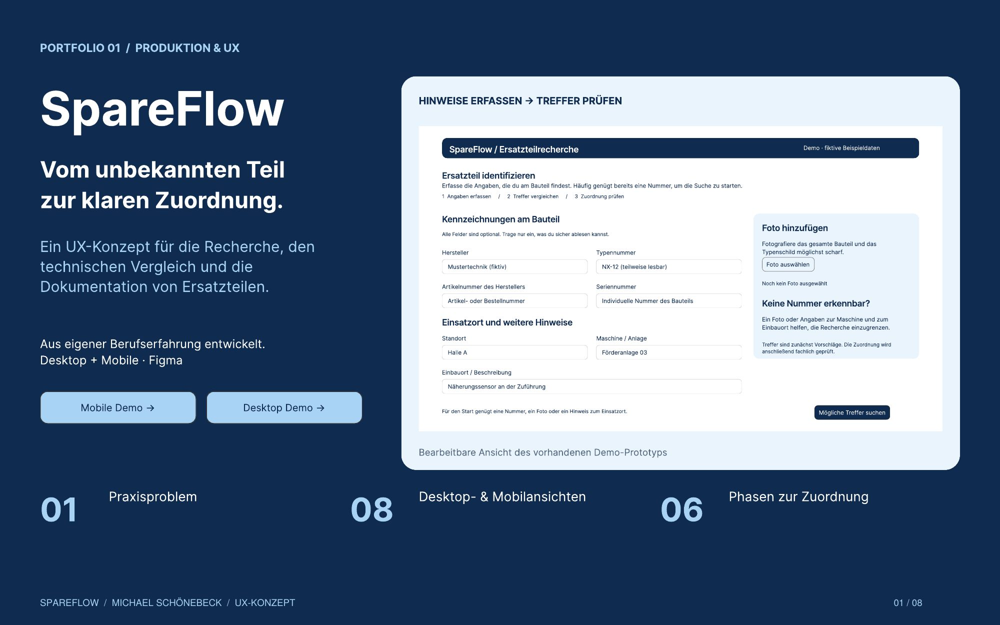
          <div class="meta">
            <p class="label">Projekt 01 · Produktion & UX</p>
            <h3>SpareFlow</h3>
            <p>Ersatzteile auch ohne Materialnummer sicher identifizieren, vergleichen und die Zuordnung belegen.</p>
            <span class="go">Fallstudie lesen →</span>
          </div>
        </a>
        <a class="pcard zl" href="#zweite-liebe">
          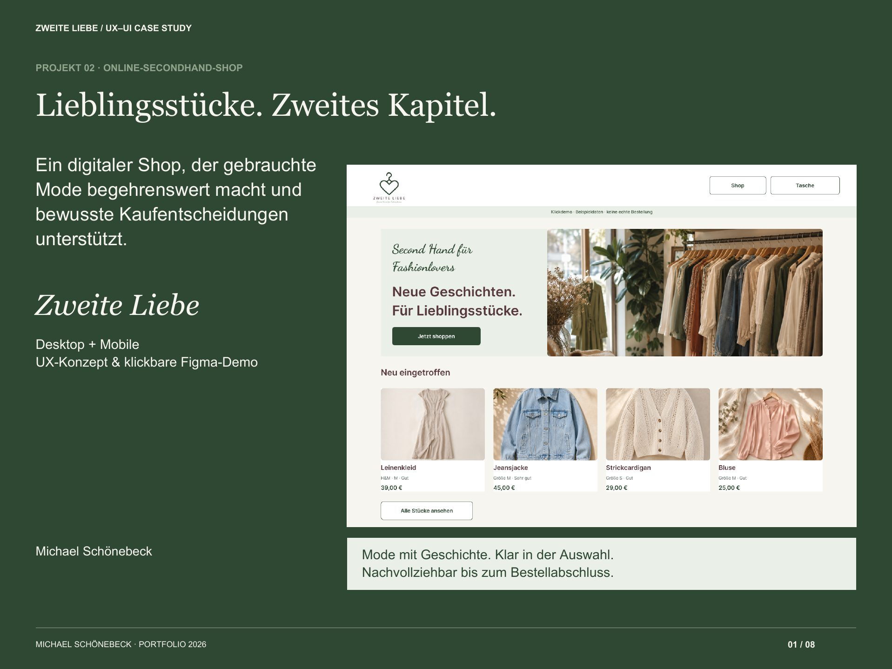
          <div class="meta">
            <p class="label">Projekt 02 · Online-Secondhand-Shop</p>
            <h3>Zweite Liebe</h3>
            <p>Gebrauchte Mode begehrenswert machen und bewusste Kaufentscheidungen mit transparenten Angaben unterstützen.</p>
            <span class="go">Fallstudie lesen →</span>
          </div>
        </a>
      </div>
    </div>
  </section>

  <!-- SpareFlow -->
  <section id="spareflow" class="section case sf">
    <div class="wrap">
      <div class="case-hero">
        <div>
          <p class="label">Projekt 01 · UX-Konzept · Oktober 2026</p>
          <h2>SpareFlow: Vom unbekannten Teil zur klaren Zuordnung</h2>
          <p>Bei Störungen, Wartungen und beim Auffüllen des Lagers fehlt oft die interne Materialnummer. Kennzeichnungen sind unlesbar, Bauteile sehen sich ähnlich, Hersteller gibt es nicht mehr. SpareFlow bündelt die Recherche und macht sichtbar, wie belastbar eine Zuordnung ist.</p>
          <div class="tags"><span class="tag">Proto-Persona</span><span class="tag">User Journey</span><span class="tag">Wireframes</span><span class="tag">Desktop + Mobile</span><span class="tag">Figma</span></div>
        </div>
        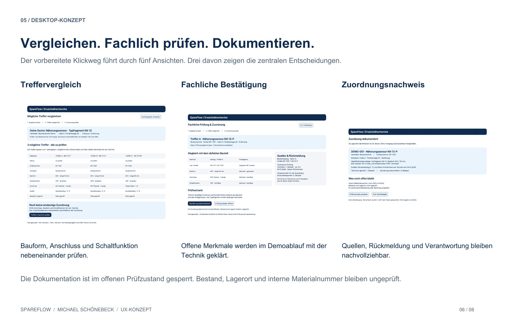
      </div>

      <div class="brief">
        <div><p class="label">Die Designfrage</p><h3>Wie recherchiert man ein Ersatzteil, wenn die Materialnummer fehlt?</h3><p>Und wie lässt sich die Zuordnung fachlich prüfen, bevor sie dokumentiert wird?</p></div>
        <div><p class="label">Mein Beitrag</p><h3>Praxiswissen aus dem Ersatzteilemanagement</h3><p>Ich habe Suchwege, Rollen und Hürden aus meinem Arbeitsalltag eingebracht und daraus Konzept, Figma-Ausarbeitung und Dokumentation entwickelt.</p></div>
        <div><p class="label">Umfang</p><h3>Erfassen, vergleichen, prüfen, dokumentieren</h3><p>SAP und Paledo bilden den betrieblichen Kontext. Bestandsbuchung, Nachbestellung und eine technische Systemanbindung sind bewusst nicht Teil des Konzepts.</p></div>
      </div>

      <div class="decisions">
        <p class="label">Was den Entwurf prägt</p>
        <ol>
          <li><b>Keine Nummer ist Pflicht</b>Hersteller, Typen-, Artikel- und Seriennummer sind getrennte, optionale Felder. Oft reicht schon eine davon für den Einstieg.</li>
          <li><b>Ein Treffer ist nur ein Vorschlag</b>Treffer bleiben „zu prüfen“, bis die Technik Bauform, Anschluss und Schaltfunktion bestätigt hat. Erst dann wird dokumentiert.</li>
          <li><b>Mobil erfassen, am Desktop prüfen</b>Hinweise entstehen direkt an der Maschine. Die Disposition übernimmt sie am Arbeitsplatz für Vergleich und Nachweis.</li>
        </ol>
      </div>

      <div class="gallery">
        <figure><button type="button" data-full="img/sf-4.jpg" aria-label="User Journey vergrößern">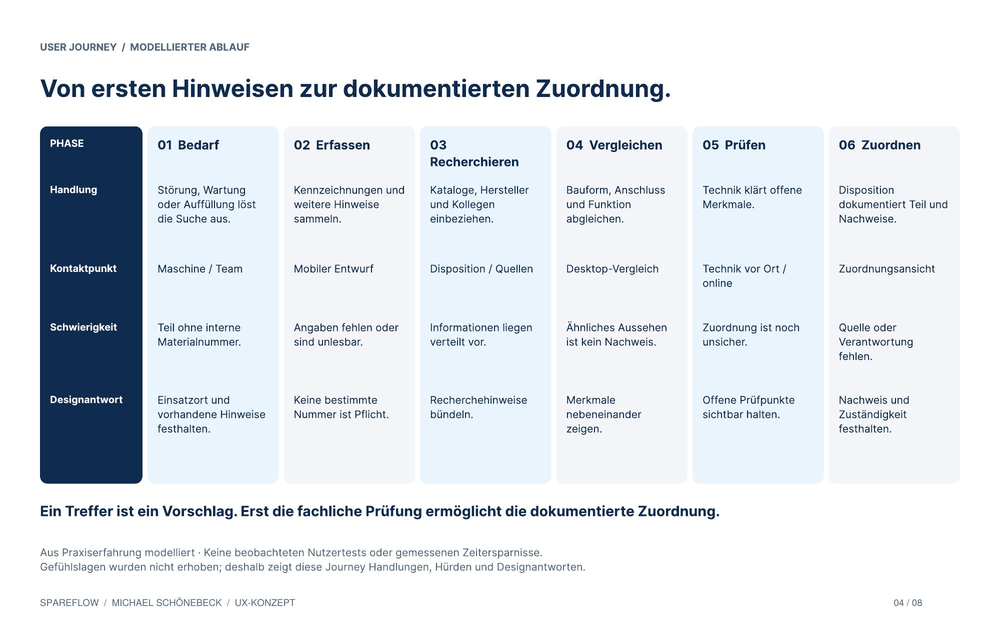</button><figcaption><b>User Journey.</b> Sechs Phasen mit Handlungen, Hürden und Designantworten.</figcaption></figure>
        <figure><button type="button" data-full="img/sf-3.jpg" aria-label="Persona vergrößern">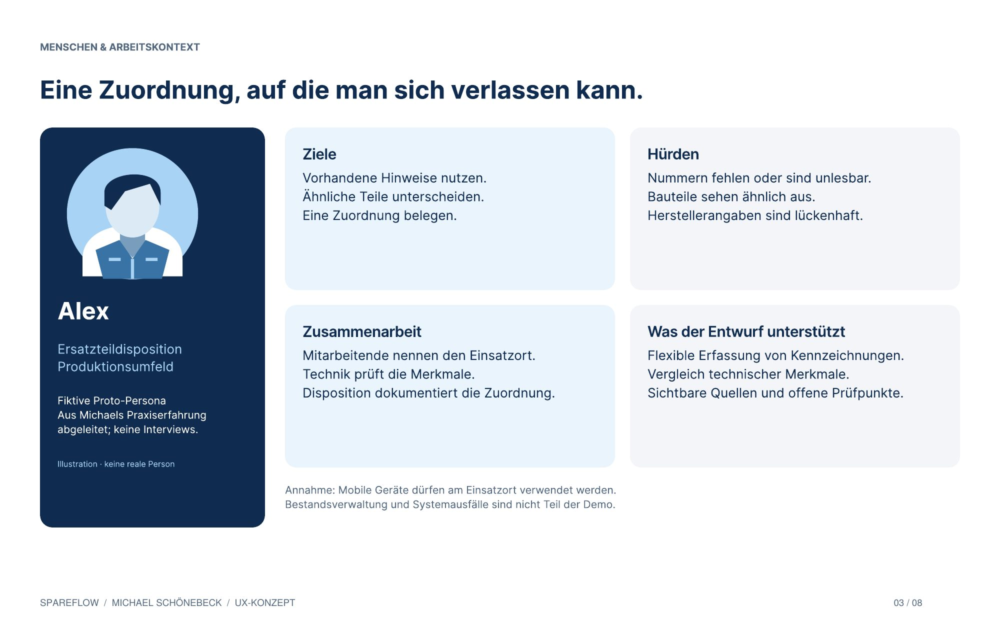</button><figcaption><b>Proto-Persona.</b> Aus Praxiserfahrung abgeleitet, als Annahme gekennzeichnet.</figcaption></figure>
        <figure><button type="button" data-full="img/sf-7.jpg" aria-label="Mobile Ansichten vergrößern">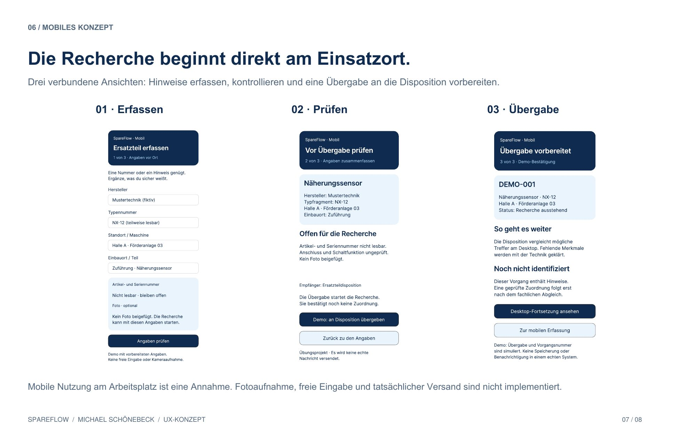</button><figcaption><b>Mobiles Konzept.</b> Erfassen, prüfen und an die Disposition übergeben.</figcaption></figure>
        <figure><button type="button" data-full="img/sf-1.jpg" aria-label="Titelseite vergrößern"></button><figcaption><b>Erfassung am Desktop.</b> Kennzeichnungen, Foto und Einsatzort an einem Ort.</figcaption></figure>
      </div>

      <div class="outcome">
        <div><p class="label">Ergebnis</p><p>Klickbare Prototypen für Desktop (fünf Ansichten) und Mobil (drei Ansichten), erläuternde Wireframes, User Journey und ein Anforderungsdokument mit User Stories.</p></div>
        <div><p class="label">Einordnung</p><p>Übungsprojekt mit fiktiven Daten. Es wurden keine Nutzertests durchgeführt und keine Zeitersparnis gemessen.</p></div>
        <div class="demo">
          <a href="https://www.figma.com/proto/w6pp23492oF4g2QUnU12xT?node-id=115-211&amp;starting-point-node-id=115%3A211" target="_blank" rel="noopener">Desktop-Prototyp <span aria-hidden="true">↗</span></a>
          <a href="https://www.figma.com/proto/w6pp23492oF4g2QUnU12xT?node-id=110-173&amp;starting-point-node-id=110%3A173" target="_blank" rel="noopener">Mobil-Prototyp <span aria-hidden="true">↗</span></a>
        </div>
      </div>
      <div class="docs">
        <p class="label">Unterlagen zum Projekt</p>
        <div class="doclist">
          <button type="button" class="doc" data-doc="sf-case" data-pages="8" data-title="SpareFlow · Fallstudie"><span class="ic">PDF</span>Fallstudie <small>8 Seiten</small></button>
          <button type="button" class="doc" data-doc="sf-kurz" data-pages="2" data-title="SpareFlow · Kurzfassung"><span class="ic">PDF</span>Kurzfassung <small>2 Seiten</small></button>
          <button type="button" class="doc" data-doc="sf-konzept" data-pages="5" data-title="SpareFlow · UX-Konzept &amp; Anforderungen"><span class="ic">PDF</span>UX-Konzept &amp; Anforderungen <small>5 Seiten</small></button>
          <button type="button" class="doc" data-doc="sf-journey" data-pages="1" data-title="SpareFlow · User Journey"><span class="ic">PDF</span>User Journey <small>1 Seite</small></button>
          <a class="doc" href="https://miro.com/app/board/uXjVEbNFq4g=/" target="_blank" rel="noopener"><span class="ic">MIRO</span>Journey-Board <small>↗</small></a>
          <a class="doc" href="https://www.figma.com/design/w6pp23492oF4g2QUnU12xT" target="_blank" rel="noopener"><span class="ic">FIGMA</span>Figma-Datei <small>↗</small></a>
        </div>
      </div>
    </div>
  </section>

  <!-- Zweite Liebe -->
  <section id="zweite-liebe" class="section case zl">
    <div class="wrap">
      <div class="case-hero">
        <div>
          <p class="label">Projekt 02 · UX/UI Case Study · Oktober 2026</p>
          <h2>Zweite Liebe: Lieblingsstücke. Zweites Kapitel.</h2>
          <p>Bei Einzelstücken reichen schöne Fotos nicht. Größe, Zustand, Material und Gesamtpreis müssen verständlich sein. Der Shop verbindet die emotionale Wirkung einer Modemarke mit einem nachvollziehbaren Kaufablauf.</p>
          <div class="tags"><span class="tag">Corporate Design</span><span class="tag">Informationsarchitektur</span><span class="tag">Responsive UI</span><span class="tag">Prototyping</span></div>
        </div>
        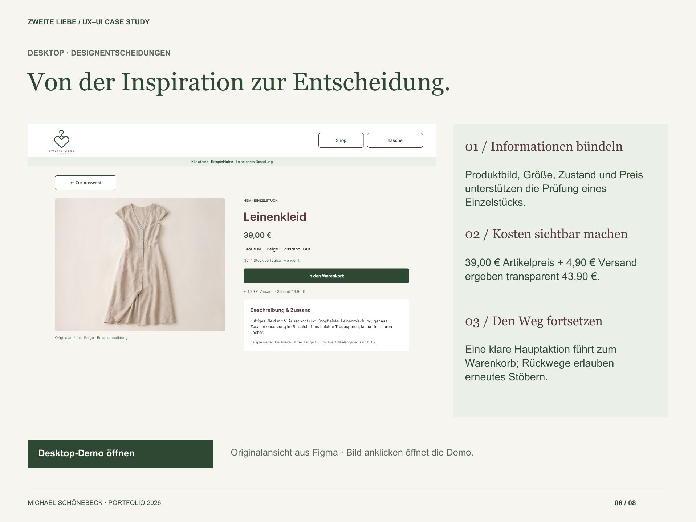
      </div>

      <div class="brief">
        <div><p class="label">Die Designfrage</p><h3>Wie wird aus „Sieht schön aus“ ein gut informierter Secondhand-Kauf?</h3><p>Vertrauen entsteht vor dem Warenkorb, nicht erst an der Kasse.</p></div>
        <div><p class="label">Mein Beitrag</p><h3>Idee, Logo, Farbkonzept, erste Entwürfe</h3><p>Weiterentwicklung der vorhandenen Desktop- und Mobilentwürfe sowie Dokumentation des gesamten Projekts.</p></div>
        <div><p class="label">Leitidee</p><h3>Länger tragen, bewusster auswählen</h3><p>Secondhand soll eine Alternative zum Neukauf sein, kein zusätzlicher Kaufanreiz um jeden Preis.</p></div>
      </div>

      <div class="decisions">
        <p class="label">Was den Entwurf prägt</p>
        <ol>
          <li><b>Informationen bündeln</b>Produktbild, Größe, Zustand und Preis stehen gemeinsam, damit sich ein Einzelstück schnell einschätzen lässt.</li>
          <li><b>Kosten sichtbar machen</b>39,00 € Artikelpreis und 4,90 € Versand ergeben transparent 43,90 €. Keine Überraschung im letzten Schritt.</li>
          <li><b>Den Weg offen halten</b>Eine klare Hauptaktion führt zum Warenkorb. Rückwege erlauben jederzeit erneutes Stöbern.</li>
        </ol>
      </div>

      <div class="gallery">
        <figure><button type="button" data-full="img/zl-5.jpg" aria-label="Visuelle Identität vergrößern">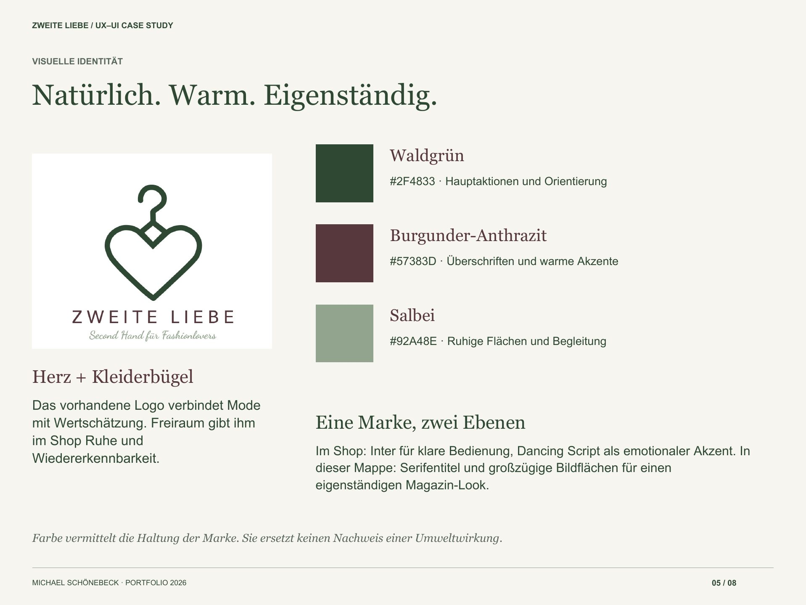</button><figcaption><b>Visuelle Identität.</b> Herz und Kleiderbügel, Waldgrün, Burgunder und Salbei.</figcaption></figure>
        <figure><button type="button" data-full="img/zl-7.jpg" aria-label="Mobilen Kaufweg vergrößern">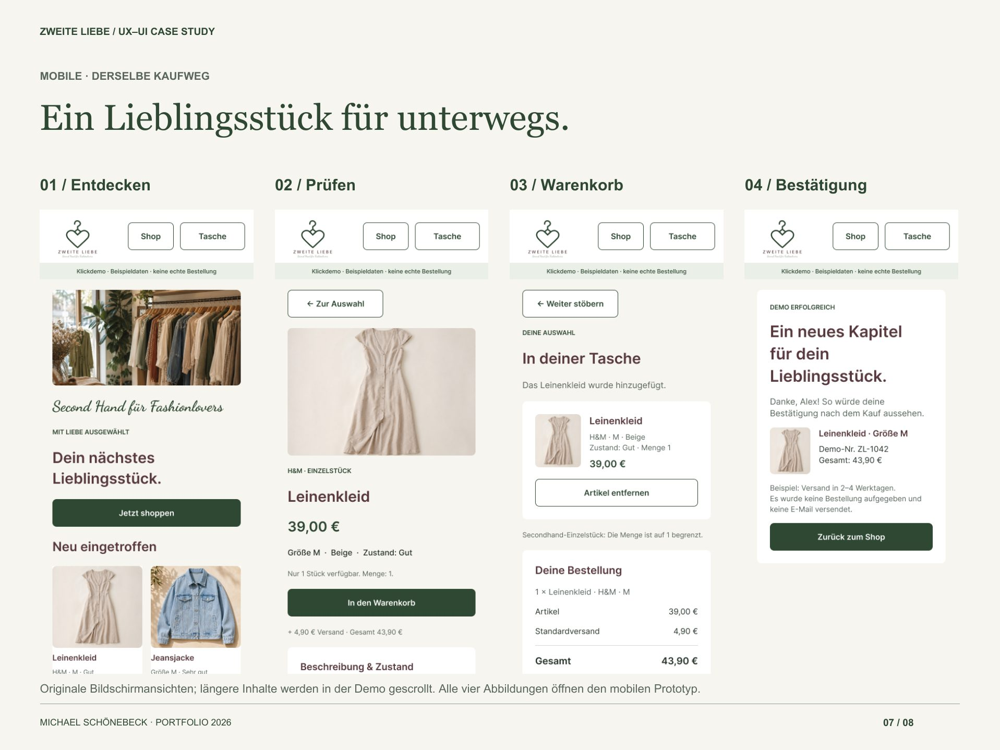</button><figcaption><b>Mobiler Kaufweg.</b> Entdecken, prüfen, Warenkorb, Bestätigung.</figcaption></figure>
        <figure><button type="button" data-full="img/zl-4.jpg" aria-label="Persona und Journey vergrößern">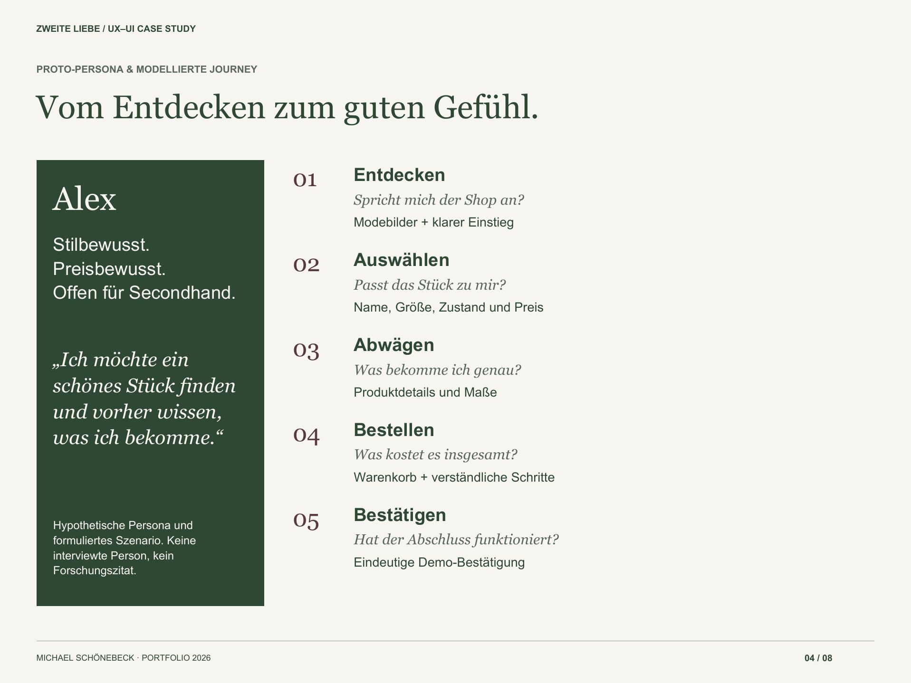</button><figcaption><b>Persona und Journey.</b> Hypothetische Persona, fünf Schritte vom Entdecken zum Abschluss.</figcaption></figure>
        <figure><button type="button" data-full="img/zl-1.jpg" aria-label="Startseite vergrößern"></button><figcaption><b>Startseite.</b> Modebilder, klarer Einstieg und Produktkarten mit Preis.</figcaption></figure>
      </div>

      <div class="outcome">
        <div><p class="label">Ergebnis</p><p>Zwei klickbare Prototypen mit je neun Ansichten. Kaufweg, Rückwege, Entfernen aus dem Warenkorb und Bestellabschluss sind durchgängig verknüpft.</p></div>
        <div><p class="label">Einordnung</p><p>Kein produktiver Shop: feste Beispieldaten, simulierte Bestellung, keine Nutzertests. Nächste Schritte wären Filter, Größenhilfe sowie Pflege- und Reparaturtipps.</p></div>
        <div class="demo">
          <a href="https://www.figma.com/proto/XKLiQQGqHN2MLfPb4rOlpq/Prototyp-Desktop-Zweite-Liebe?node-id=6074-1000&amp;starting-point-node-id=6074%3A1000" target="_blank" rel="noopener">Desktop-Prototyp <span aria-hidden="true">↗</span></a>
          <a href="https://www.figma.com/proto/PMmHUDZnePpi9BW4EMU8BZ/Prototyp-Mobil-Zweite-Liebe?node-id=4128-62&amp;starting-point-node-id=4128%3A62" target="_blank" rel="noopener">Mobil-Prototyp <span aria-hidden="true">↗</span></a>
        </div>
      </div>
      <div class="docs">
        <p class="label">Unterlagen zum Projekt</p>
        <div class="doclist">
          <button type="button" class="doc" data-doc="zl-case" data-pages="8" data-title="Zweite Liebe · Fallstudie"><span class="ic">PDF</span>Fallstudie <small>8 Seiten</small></button>
        </div>
      </div>
    </div>
  </section>

  <!-- Weitere Arbeiten -->
  <section id="weitere" class="section" style="border-top:1px solid var(--line)">
    <div class="wrap">
      <div class="section-head">
        <p class="label">Weitere Arbeiten</p>
        <h2>Methoden, die hinter den Entwürfen stehen</h2>
        <p class="lead">Analyse, Anforderungen und Journey-Mapping: Arbeiten aus dem Fernstudium und Ergänzungen zu SpareFlow.</p>
      </div>
      <div class="more">
        <article class="mcard wide mars">
          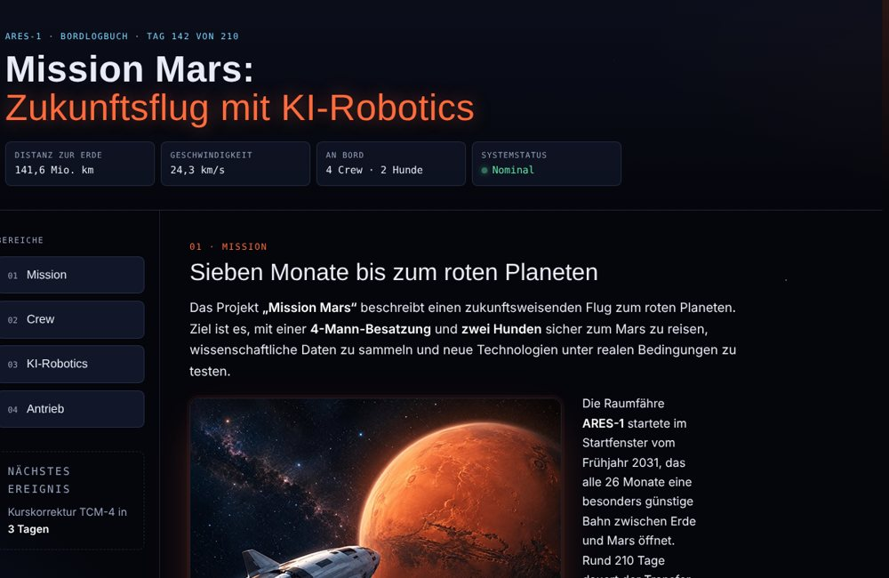
          <div>
            <p class="label">Responsive Webdesign · Studienarbeit</p>
            <h3>Mission Mars: Mobile First mit Flexbox</h3>
            <p>Einsendeaufgabe aus dem Modul Responsive Webdesign, nachträglich neu gestaltet. Eine fiktive Marsmission mit vier Bereichen: Mission, Crew, KI-Robotics und Antrieb.</p>
            <ul>
              <li>Mobil einspaltig mit horizontaler Navigation, ab 48em zweispaltig mit Flexbox</li>
              <li>Fluid Image auf dem Handy, auf dem Desktop in Originalgröße mit Textumfluss</li>
              <li>Eigenes HTML und CSS ohne Framework, Illustrationen als SVG</li>
            </ul>
            <div class="doclist">
              <a class="doc" href="mission-mars/" target="_blank" rel="noopener"><span class="ic">LIVE</span>Seite öffnen <small>↗</small></a>
              <button type="button" class="doc" data-doc="mars" data-pages="4" data-title="Mission Mars · Desktop und Mobil"><span class="ic">IMG</span>Screenshots <small>Desktop + Mobil</small></button>
            </div>
          </div>
        </article>
        <article class="mcard wide">
          <div>
            <p class="label">Usability-Analyse · Studienarbeit</p>
            <h3>apple.de nach ISO 9241-110</h3>
            <p>Bewertung einer Website mit hoher Gebrauchstauglichkeit: Nutzergruppen, Nutzungskontext, Interaktionsprinzipien und Barrierefreiheit.</p>
            <ul>
              <li><b>Nutzergruppen:</b> Kaufinteressierte, technik- und designaffine Menschen, Menschen mit Seh-, Hör- oder Mobilitätseinschränkungen, breite Altersspanne.</li>
              <li><b>Nutzungskontext:</b> Produkte vergleichen und auswählen, zu Hause oder unterwegs, mit Desktop, Tablet, Smartphone und assistiven Eingabemitteln.</li>
              <li><b>Barrierefreiheit:</b> dokumentierte Hilfen wie Screenreader, Vergrößerung, hohe Kontraste und Sprachsteuerung.</li>
            </ul>
            <p class="note">Eigene Experteneinschätzung im Rahmen des Studiums, ohne Nutzertests.</p>
          </div>
          <ul class="iso" aria-label="Bewertete Interaktionsprinzipien">
            <li><b>Aufgabenangemessenheit</b>Technik, Preis und Varianten auf einen Blick, ohne Ablenkung.</li>
            <li><b>Selbstbeschreibungsfähigkeit</b>Klar benannte Aktionen wie Kaufen oder Technische Daten.</li>
            <li><b>Steuerbarkeit</b>Varianten wählen, zurückgehen und Kategorien wechseln jederzeit möglich.</li>
            <li><b>Erwartungskonformität</b>Verhält sich wie gängige Online-Shops, gleiche Elemente wirken gleich.</li>
            <li><b>Fehlertoleranz</b>Auswahl bleibt änderbar, Produktansicht und Bestellung sind klar getrennt.</li>
            <li><b>Individualisierbarkeit</b>Funktioniert auf verschiedenen Geräten und Bildschirmgrößen.</li>
          </ul>
        </article>
        <article class="mcard wide ctx">
          <div>
            <p class="label">Research · Studienarbeit</p>
            <h3>Nutzungskontext: Weiterbildung mit Familie</h3>
            <p>Aufgabe war, für eine fiktive Lernplattform den vollständigen Nutzungskontext der Gruppe „Menschen in einer Weiterbildung mit Familienverantwortung“ zu beschreiben: wer sie sind, was sie erledigen, womit und unter welchen Bedingungen.</p>
            <p class="label" style="margin-top:6px">Abgeleitete Anforderungen</p>
            <ul>
              <li>Zeitflexibel und übersichtlich, mit wenigen Klicks zum Ziel</li>
              <li>Kurze Ladezeiten, mobil optimiert, klare Navigation</li>
              <li>Fristen gut sichtbar, mit Erinnerungen und klaren Rückmeldungen</li>
              <li>Fehlertolerant, etwa Hinweise vor einer vergessenen Abgabe</li>
              <li>Lernstand schnell prüfbar, Motivation durch Checklisten und Fortschritt</li>
              <li>Auch abends mit müden Augen leicht bedienbar</li>
            </ul>
            <p class="note">Studienarbeit auf Basis von Annahmen, ohne Befragung oder Nutzertests.</p>
          </div>
          <ul class="iso" aria-label="Dimensionen des Nutzungskontexts">
            <li><b>Nutzergruppe</b>Meist 25 bis 50 Jahre, berufsbegleitend, oft mit Kindern. Hohe Belastung durch Job, Familie und Weiterbildung, unterschiedlich technikaffin.</li>
            <li><b>Aufgaben</b>Lerninhalte abrufen, kurze Einheiten von 10 bis 20 Minuten einschieben, Aufgaben abgeben, Fristen und Termine im Blick behalten.</li>
            <li><b>Arbeitsmittel</b>Geteilter Familien-Laptop oder Tablet, Smartphone für unterwegs, WLAN in schwankender Qualität, Kopfhörer, Kalender.</li>
            <li><b>Umfeld</b>Meist zu Hause, oft abends oder nachts, mit Unterbrechungen durch Familie und Haushalt. Teils unterwegs in Bus, Bahn oder Pausen.</li>
          </ul>
        </article>
        <article class="mcard">
          <p class="label">Anforderungen · SpareFlow</p>
          <h3>Vom Entwurf zur Umsetzung</h3>
          <p>Ein fünfseitiges Konzeptdokument übersetzt den Prototyp in überprüfbare Anforderungen für Entwicklung und Fachbereich.</p>
          <ul><li>5 User Stories mit 20 Akzeptanzkriterien</li><li>Qualitätsanforderungen</li><li>Abgrenzung: was der Prototyp zeigt und was offen ist</li></ul>
          <div class="doclist"><button type="button" class="doc" data-doc="sf-konzept" data-pages="5" data-title="SpareFlow · UX-Konzept &amp; Anforderungen"><span class="ic">PDF</span>Konzept öffnen <small>5 Seiten</small></button></div>
        </article>
        <article class="mcard">
          <p class="label">Journey Mapping · Miro</p>
          <h3>SpareFlow-Journey als Arbeitsboard</h3>
          <p>Die sechs Phasen von Bedarf bis Zuordnung als bearbeitbares Miro-Board, verknüpft mit den User Stories.</p>
          <ul><li>Handlungen, Hürden und Verbesserungsideen je Phase</li><li>Grundlage für Workshops mit Technik und Disposition</li></ul>
          <div class="doclist"><a class="doc" href="https://miro.com/app/board/uXjVEbNFq4g=/" target="_blank" rel="noopener"><span class="ic">MIRO</span>Board öffnen <small>↗</small></a><button type="button" class="doc" data-doc="sf-journey" data-pages="1" data-title="SpareFlow · User Journey"><span class="ic">PDF</span>Journey als PDF <small>1 Seite</small></button></div>
        </article>
      </div>
    </div>
  </section>

  <!-- Creative Lab -->
  <section id="creative-lab" class="section lab">
    <div class="wrap">
      <div class="section-head">
        <p class="label">Creative Lab</p>
        <h2>Bilder aus einer anderen Umlaufbahn</h2>
        <p class="lead">Neben UX fotografiere ich und baue aus meinen Aufnahmen Szenen zwischen Erde und All. Hier zeige ich nicht nur das Ergebnis, sondern auch das Rohbild und die Entscheidungen dazwischen.</p>
        <div class="honest"><span>Alle Fotos und Videos selbst aufgenommen</span><span>Ohne KI bearbeitet</span><span>Compositing in Photoshop</span></div>
      </div>

      <ol class="labflow" aria-label="Arbeitsweise im Compositing">
        <li><span class="n">01</span><b>Ausgangsbild lesen</b><p>Licht, Perspektive und Fluchtlinien bestimmen, was sich glaubwürdig einfügen lässt.</p></li>
        <li><span class="n">02</span><b>Geschichte festlegen</b><p>Ein Satz beschreibt, was passieren soll. Jedes Element muss diese Idee stützen.</p></li>
        <li><span class="n">03</span><b>Aufbauen und angleichen</b><p>Ebenen, Masken, Licht und Farbe, bis alles aus derselben Welt zu stammen scheint.</p></li>
        <li><span class="n">04</span><b>Prüfen und reduzieren</b><p>Mit Abstand ansehen, Störendes entfernen und in mehreren Versionen verfeinern.</p></li>
      </ol>
      <p class="labnote">Derselbe Ablauf wie im UX-Design: erst verstehen, dann gestalten, dann prüfen.</p>

      <div class="lsub">
        <p class="label">Digital Compositing</p>
        <h3 style="font-size:clamp(1.5rem,3vw,2.1rem);font-weight:400">Vom Rohbild zur Szene</h3>
      </div>

      <article class="lcase">
        <div class="compare">
          <figure><button type="button" data-full="cl/fissure-raw.jpg" aria-label="Rohbild Fissure vergrößern">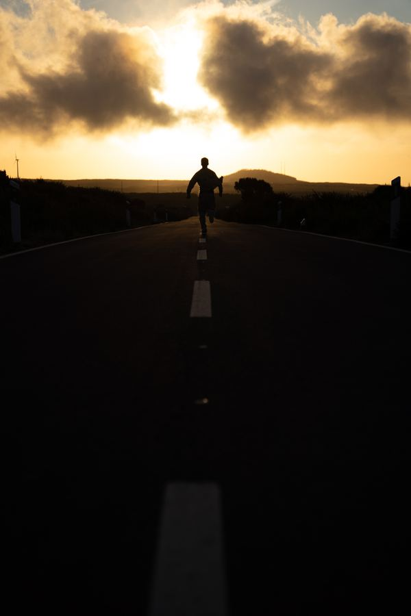</button><figcaption>Rohbild</figcaption></figure>
          <figure class="after"><button type="button" data-full="cl/fissure-final.jpg" aria-label="Ergebnis Fissure vergrößern">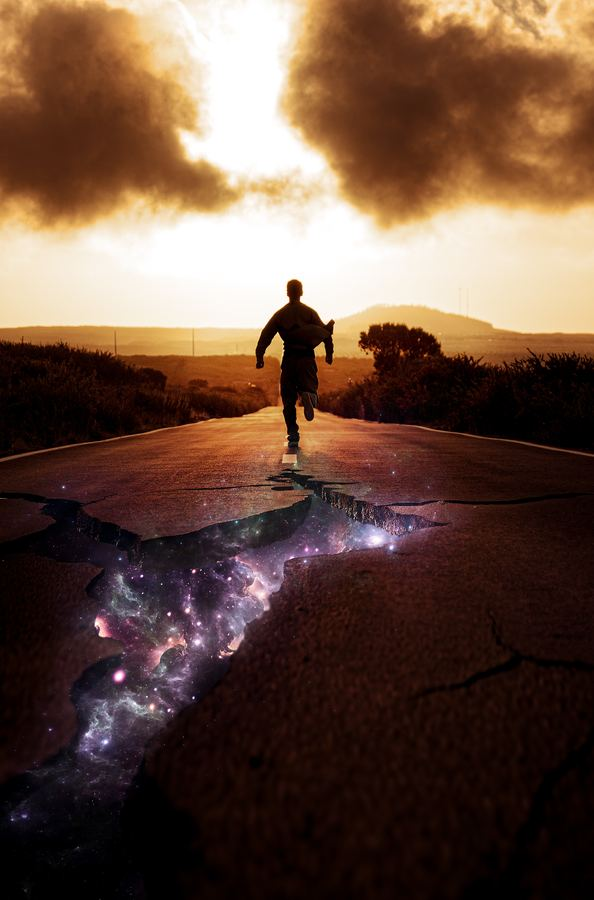</button><figcaption>Ergebnis</figcaption></figure>
        </div>
        <div class="txt">
          <p class="label">Compositing · Madeira</p>
          <h3>Fissure</h3>
          <dl>
            <div><dt>Ausgangslage</dt><dd>Ein Läufer im Gegenlicht auf einer leeren Landstraße. Die Stimmung stimmt, aber die untere Bildhälfte ist eine dunkle Fläche ohne Spannung.</dd></div>
            <div><dt>Idee</dt><dd>Der Asphalt reißt auf und gibt den Blick ins All frei. Der Läufer wirkt, als würde er vor dem Riss davonlaufen.</dd></div>
            <div><dt>Entscheidungen</dt><dd><ul>
              <li>Der Riss folgt der Fluchtlinie der Straße und führt den Blick direkt zur Figur.</li>
              <li>Die Mittellinie ist entfernt, damit der Riss die einzige Führungslinie bleibt.</li>
              <li>Kühles Violett im Spalt als Gegenpol zum warmen Gegenlicht, die Kanten aufgehellt, als käme Licht von unten.</li>
            </ul></dd></div>
            <div><dt>Ergebnis</dt><dd>Eine klare Leserichtung: vom Riss im Vordergrund zur Figur am Horizont.</dd></div>
          </dl>
        </div>
      </article>

      <article class="lcase">
        <div class="compare">
          <figure><button type="button" data-full="cl/worker-raw.jpg" aria-label="Rohbild Space Worker vergrößern">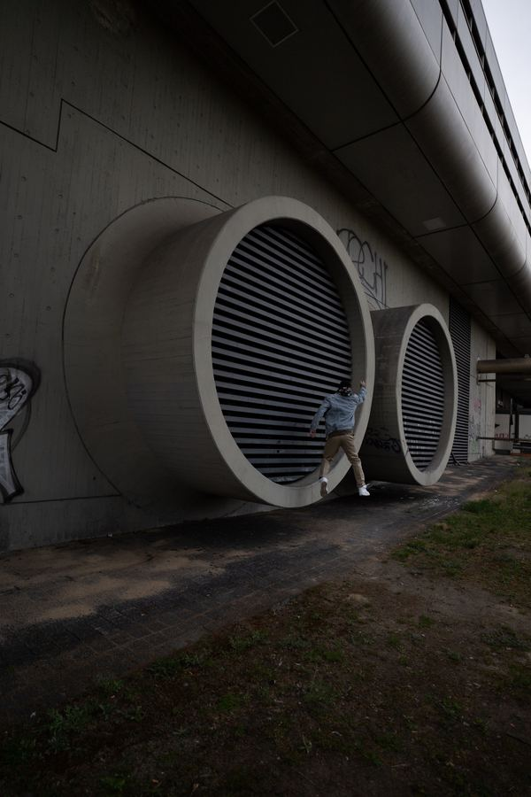</button><figcaption>Rohbild</figcaption></figure>
          <figure class="after"><button type="button" data-full="cl/worker-final.jpg" aria-label="Ergebnis Space Worker vergrößern">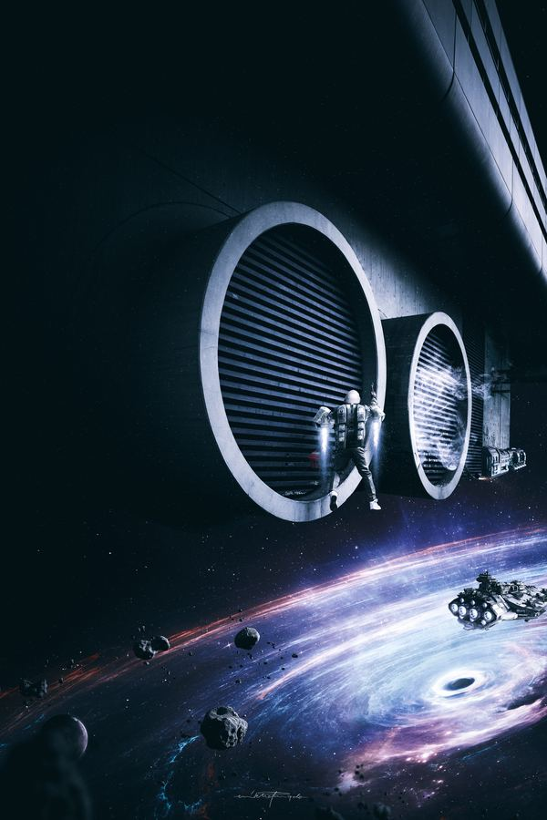</button><figcaption>Ergebnis</figcaption></figure>
        </div>
        <div class="txt">
          <p class="label">Compositing · Architektur</p>
          <h3>Space Worker</h3>
          <dl>
            <div><dt>Ausgangslage</dt><dd>Ein Sprung vor zwei runden Lüftungsöffnungen einer Betonfassade, mit Graffiti, Kies und Gras im Bild.</dd></div>
            <div><dt>Idee</dt><dd>Die Fassade wird zur Raumstation, der Sprung zum Außeneinsatz in der Schwerelosigkeit.</dd></div>
            <div><dt>Entscheidungen</dt><dd><ul>
              <li>Graffiti und Boden entfernt: Unter der Station öffnet sich das All mit Galaxie und Asteroiden.</li>
              <li>Die Kleidung wird zum Raumanzug, damit die Figur in die neue Welt passt.</li>
              <li>Das Licht aus den Schächten ist die Hauptlichtquelle und hält die Szene zusammen.</li>
            </ul></dd></div>
            <div><dt>Ergebnis</dt><dd>Die echte Architektur bleibt erkennbar. Gerade diese Spur Realität macht die Szene glaubwürdig.</dd></div>
          </dl>
        </div>
      </article>

      <article class="lcase">
        <div class="compare">
          <figure><button type="button" data-full="cl/tiny-raw.jpg" aria-label="Rohbild Tiny House vergrößern">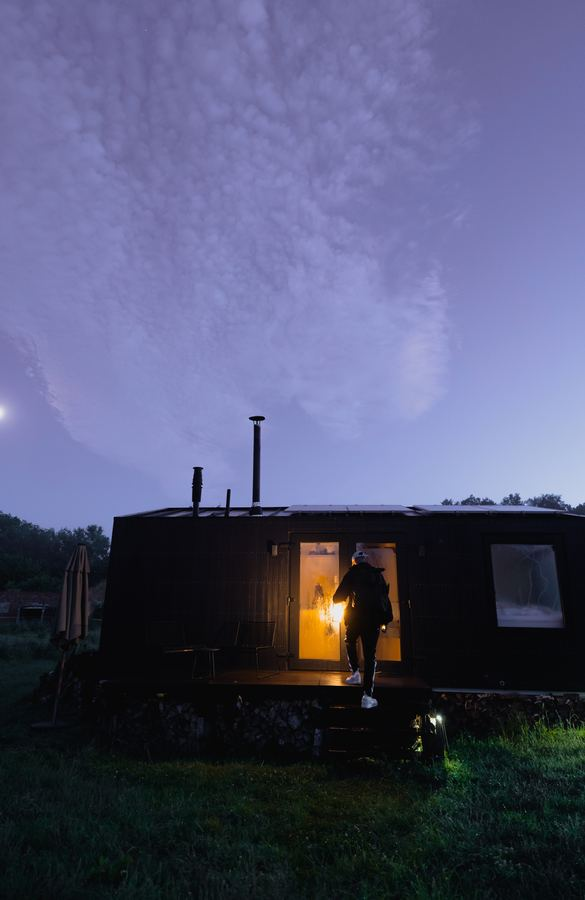</button><figcaption>Rohbild</figcaption></figure>
          <figure class="after"><button type="button" data-full="cl/tiny-final.jpg" aria-label="Ergebnis Tiny House vergrößern">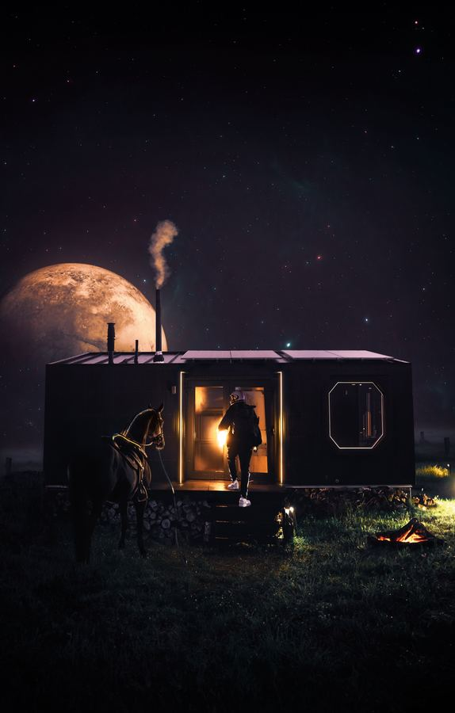</button><figcaption>Ergebnis</figcaption></figure>
        </div>
        <div class="txt">
          <p class="label">Compositing · Nachtszene</p>
          <h3>Tiny House at Night</h3>
          <dl>
            <div><dt>Ausgangslage</dt><dd>Blaue Stunde vor einem Tiny House. Der Himmel ist hell und unruhig, links lenken Sonnenschirm und Möbel vom Motiv ab.</dd></div>
            <div><dt>Idee</dt><dd>Ein Zuhause am Rand des Universums: ruhig, bewohnt und ein wenig märchenhaft.</dd></div>
            <div><dt>Entscheidungen</dt><dd><ul>
              <li>Himmel abgedunkelt, Sterne und ein aufgehender Planet als neuer Hintergrund.</li>
              <li>Störende Möbel entfernt. Pferd, Lagerfeuer und Rauch aus dem Schornstein erzählen, dass hier jemand lebt.</li>
              <li>Das warme Türlicht bleibt der Mittelpunkt, alles andere ist kühl und dunkel. Das rechte Fenster bekam eine neue Form.</li>
            </ul></dd></div>
            <div><dt>Ergebnis</dt><dd>Sieben Versionen bis zum finalen Bild.</dd></div>
          </dl>
        </div>
      </article>

      <article class="lcase">
        <div class="compare sd">
          <figure><video src="cl/stardust-workflow.mp4" poster="cl/stardust-workflow-poster.jpg" controls muted playsinline preload="none" aria-label="Zeitraffer des Photoshop-Ablaufs zu Stardust Cry"></video><figcaption>Prozess</figcaption></figure>
          <figure class="after"><button type="button" data-full="cl/stardust-final.jpg" aria-label="Ergebnis Stardust Cry vergrößern">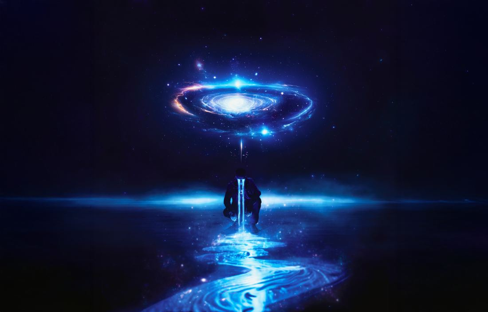</button><figcaption>Ergebnis</figcaption></figure>
        </div>
        <div class="txt">
          <p class="label">Compositing · Wallpaper</p>
          <h3>Stardust Cry</h3>
          <dl>
            <div><dt>Ausgangslage</dt><dd>Eine freigestellte, kniende Figur, sonst nichts. Die ganze Welt um sie herum entsteht neu.</dd></div>
            <div><dt>Idee</dt><dd>Sternenstaub fließt zu Boden und wird zu einem leuchtenden Fluss. Darüber schwebt eine Galaxie.</dd></div>
            <div><dt>Entscheidungen</dt><dd><ul>
              <li>Der Lichtfluss beginnt am unteren Bildrand und führt den Blick zur Figur.</li>
              <li>Die Galaxie steht genau über dem Kopf, ein Lichtfaden verbindet beide zu einer Achse.</li>
              <li>Der Farbabgleich kommt erst, wenn alle Ebenen stehen: Aus Magenta und Grün wird ein einheitliches Blau.</li>
            </ul></dd></div>
            <div><dt>Ergebnis</dt><dd>Ein Desktop-Hintergrund im Querformat. Das Video zeigt den Photoshop-Ablauf im Zeitraffer.</dd></div>
          </dl>
        </div>
      </article>


      <div class="lsub">
        <p class="label">Visual Identity</p>
        <h3 style="font-size:clamp(1.5rem,3vw,2.1rem);font-weight:400">Vom Zeichen zur Marke</h3>
      </div>

      <article class="lcase">
        <div>
          <button type="button" class="agprev" data-ag aria-label="Logo-Konzept Aliengelo öffnen, 6 Folien"><div class="agslide"><div class="agf" aria-hidden="true"><div class="ag-space ag-s1" style="width: 1600px; height: 900px; box-sizing: border-box; padding: 64px 80px; position: relative; overflow: hidden; display: flex; flex-direction: column; justify-content: space-between; color: #e8eef8; font-family: 'Exo 2', sans-serif">
<div style="display: flex; justify-content: space-between; align-items: center; font-family: 'IBM Plex Mono', monospace; font-size: 15px; letter-spacing: .14em; text-transform: uppercase; color: #94a2bb">
<span>Logo-Konzept · Creative Lab</span>
<span style="color: #86b7ff">Visual Identity · 2026</span>
</div>
<div style="display: flex; flex-direction: column; align-items: center; gap: 56px">
<svg class="ag-glow" viewBox="0 0 1042 595" role="img" aria-label="Aliengelo Bildmarke" style="width: 500px; height: auto; color: #e8eef8"><use href="#ag-m" fill="currentColor"></use></svg>
<svg viewBox="0 0 2091 408" role="img" aria-label="Aliengelo" style="width: 720px; height: auto; color: #e8eef8"><use href="#ag-w" fill="currentColor"></use></svg>
</div>
<div style="display: flex; justify-content: space-between; align-items: flex-end; gap: 40px">
<p style="margin: 0; font-family: 'IBM Plex Mono', monospace; font-size: 16px; letter-spacing: .08em; color: #94a2bb">Michael + Alien + Saturn = <span style="color: #e8eef8">Λliengelo</span></p>
<p style="margin: 0; font-family: Michroma, sans-serif; font-size: 14px; letter-spacing: .12em; text-transform: uppercase; color: #94a2bb; text-align: right">Michael Schönebeck<br>Visual Creator</p>
</div>
</div></div></div></button>
        </div>
        <div class="txt">
          <p class="label">Visual Identity · Persönliche Marke</p>
          <h3>Λliengelo</h3>
          <dl>
            <div><dt>Ausgangslage</dt><dd>Name und Logo gab es bereits, aber ihre Bedeutung war nirgends festgehalten, und es fehlten Regeln für Farbe, Schrift und Einsatz.</dd></div>
            <div><dt>Idee</dt><dd>Den Künstlernamen als Marke erzählen: Engel, Alien und Kosmos in einem Zeichen. The Angel Beyond Earth.</dd></div>
            <div><dt>Entscheidungen</dt><dd><ul>
              <li>Ein einziger Ring ist Heiligenschein, Saturnring und UFO zugleich, die offene Unterseite bildet das Λ.</li>
              <li>Farben und Schriften stammen aus diesem Portfolio, damit Marke und Portfolio als ein System wirken.</li>
              <li>Varianten für dunkle und helle Flächen sowie kleine Größen, mit Schutzzone und Mindestgröße.</li>
            </ul></dd></div>
            <div><dt>Ergebnis</dt><dd>Ein Markenkonzept in sechs Folien, von der Herleitung bis zu Visitenkarte, Profilbild und App-Symbol.</dd></div>
          </dl>
          <div class="doclist"><button type="button" class="doc" data-ag><span class="ic">KONZEPT</span>Folien ansehen <small>6 Folien</small></button></div>
        </div>
      </article>

      <div class="lsub">
        <p class="label">Galerie</p>
        <h3 style="font-size:clamp(1.5rem,3vw,2.1rem);font-weight:400">Fotografie, Compositing und Motion</h3>
      </div>
      <div class="labtabs" role="group" aria-label="Galerie filtern">
        <button type="button" data-f="all" aria-pressed="true">Alle<small>15</small></button>
        <button type="button" data-f="foto" aria-pressed="false">Fotografie<small>9</small></button>
        <button type="button" data-f="comp" aria-pressed="false">Digital Compositing<small>5</small></button>
        <button type="button" data-f="motion" aria-pressed="false">Motion Design<small>1</small></button>
      </div>
      <div class="labgrid">
        <figure data-cat="comp"><button type="button" data-full="cl/p01.jpg" aria-label="Bild vergrößern">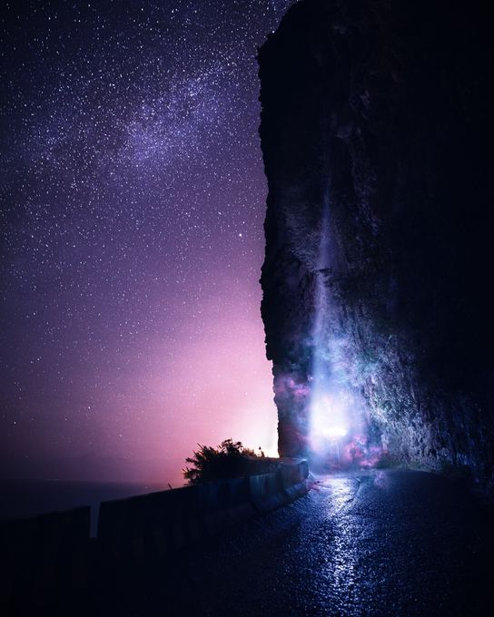</button><figcaption><b>Magic Anjos by Night</b><span>Compositing</span></figcaption></figure>
        <figure data-cat="foto"><button type="button" data-full="cl/p03.jpg" aria-label="Bild vergrößern">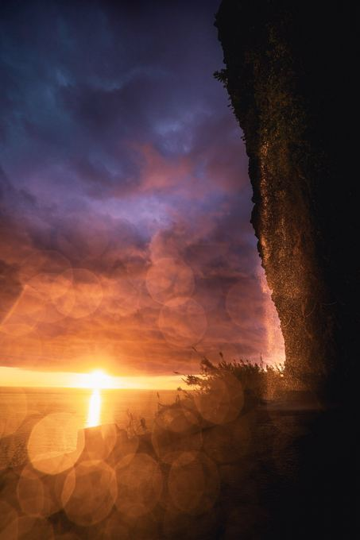</button><figcaption><b>Magic Anjos Waterfall</b><span>Fotografie</span></figcaption></figure>
        <figure data-cat="comp"><button type="button" data-full="cl/p02.jpg" aria-label="Bild vergrößern">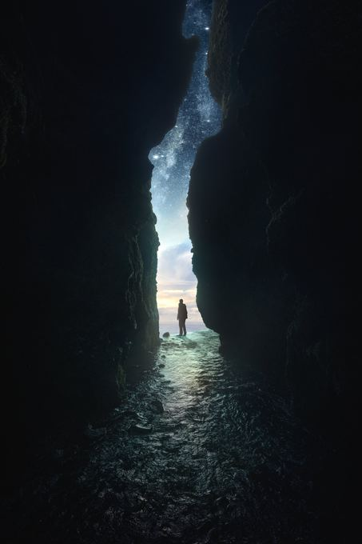</button><figcaption><b>The Rift</b><span>Compositing</span></figcaption></figure>
        <figure data-cat="foto"><button type="button" data-full="cl/p05.jpg" aria-label="Bild vergrößern">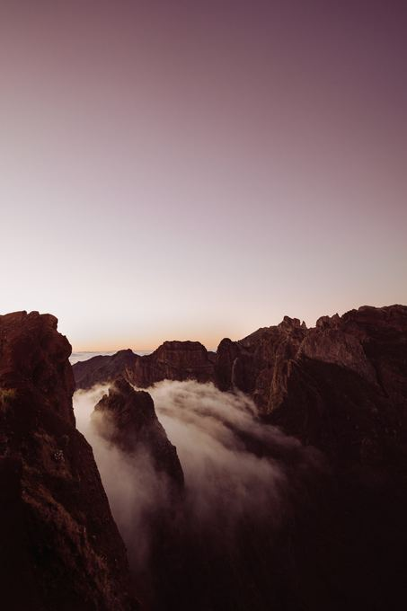</button><figcaption><b>River of Clouds</b><span>Fotografie</span></figcaption></figure>
        <figure data-cat="foto"><button type="button" data-full="cl/p09.jpg" aria-label="Bild vergrößern"></button><figcaption><b>Clouds on Fire</b><span>Fotografie</span></figcaption></figure>
        <figure data-cat="comp"><button type="button" data-full="cl/p04.jpg" aria-label="Bild vergrößern">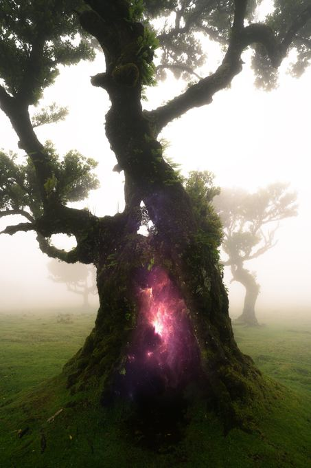</button><figcaption><b>Heart of Stars</b><span>Compositing</span></figcaption></figure>
        <figure data-cat="comp"><button type="button" data-full="cl/p17.jpg" aria-label="Bild vergrößern">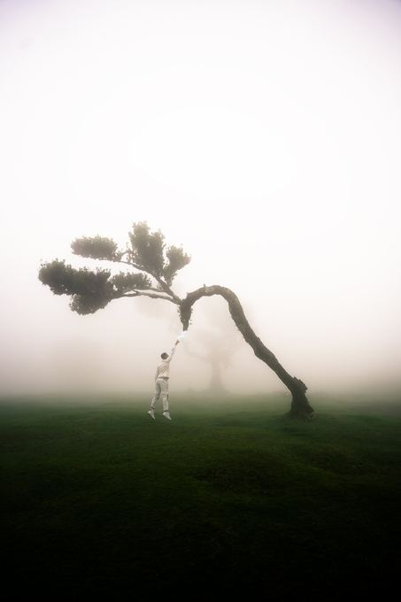</button><figcaption><b>Breathe New Life</b><span>Compositing</span></figcaption></figure>
        <figure data-cat="foto"><button type="button" data-full="cl/p08.jpg" aria-label="Bild vergrößern">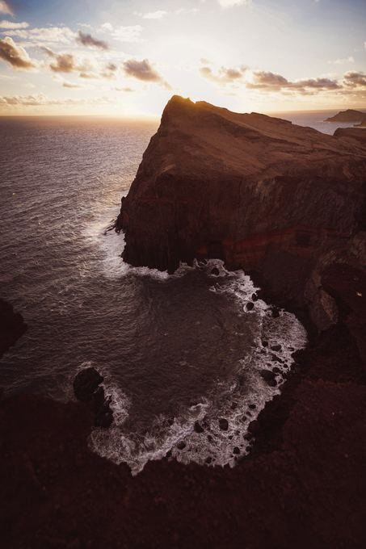</button><figcaption><b>End of the Island</b><span>Fotografie</span></figcaption></figure>
        <figure data-cat="foto"><button type="button" data-full="cl/p06.jpg" aria-label="Bild vergrößern">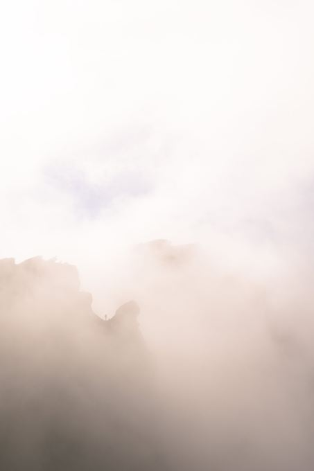</button><figcaption><b>Into the Fog</b><span>Fotografie</span></figcaption></figure>
        <figure data-cat="comp"><button type="button" data-full="cl/p10.jpg" aria-label="Bild vergrößern">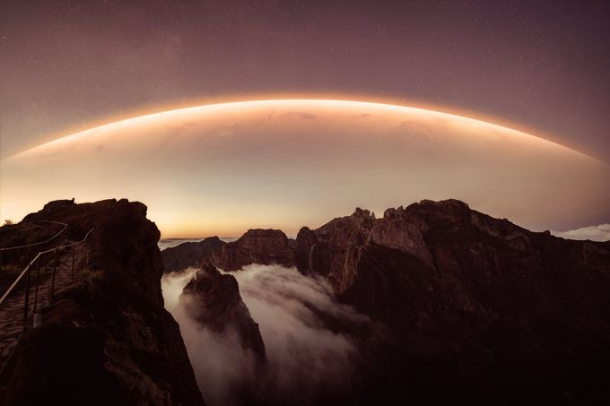</button><figcaption><b>Planetrise</b><span>Compositing</span></figcaption></figure>
        <figure data-cat="foto"><button type="button" data-full="cl/p07.jpg" aria-label="Bild vergrößern">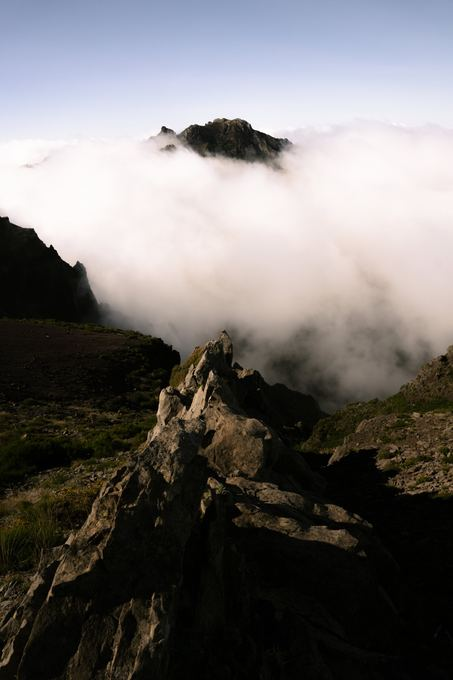</button><figcaption><b>Above the Clouds</b><span>Fotografie</span></figcaption></figure>
        <figure data-cat="motion"><video src="cl/space-polaroid.mp4" poster="cl/space-polaroid-poster.jpg" controls playsinline preload="none" aria-label="Video Space Polaroid: eine Hand hält ein Sofortbild, auf dem sich ein schwarzes Loch dreht"></video><figcaption><b>Space Polaroid</b><span>Motion · 14 s</span></figcaption></figure>
        <figure data-cat="foto"><button type="button" data-full="cl/p14.jpg" aria-label="Bild vergrößern">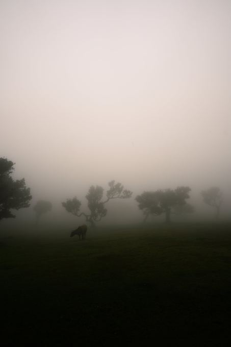</button><figcaption><b>Silent Pasture</b><span>Fotografie</span></figcaption></figure>
        <figure data-cat="foto"><button type="button" data-full="cl/p12.jpg" aria-label="Bild vergrößern">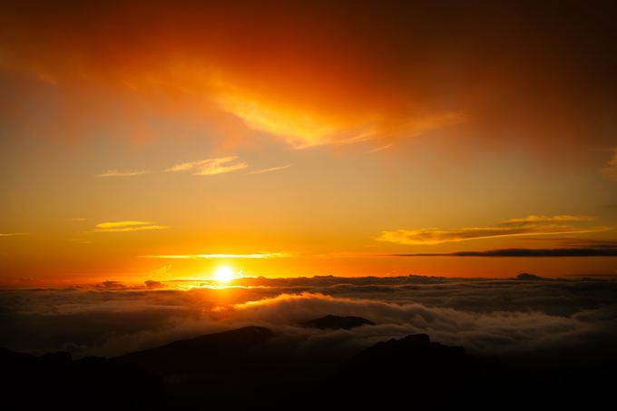</button><figcaption><b>Gateway of Gold</b><span>Fotografie</span></figcaption></figure>
        <figure data-cat="foto"><button type="button" data-full="cl/p15.jpg" aria-label="Bild vergrößern">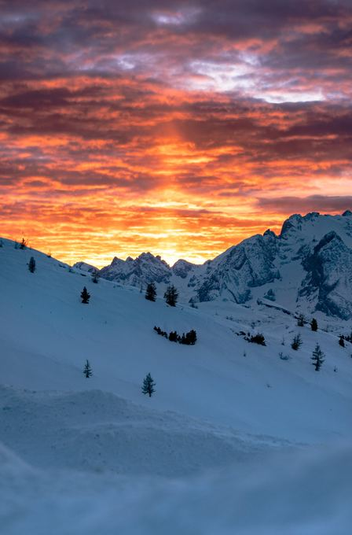</button><figcaption><b>Winter Glow</b><span>Fotografie</span></figcaption></figure>
      </div>
    </div>
  </section>

  <!-- Arbeitsweise -->
  <section id="arbeitsweise" class="section" style="padding-top:0">
    <div class="wrap">
      <div class="section-head">
        <p class="label">Arbeitsweise</p>
        <h2>Erst verstehen, dann gestalten</h2>
        <p class="lead">Nutzerbedürfnisse, Prozesse und technische Rahmenbedingungen bilden die Basis jeder Lösung.</p>
      </div>
      <ol class="process">
        <li><span class="n">1</span><b>Verstehen</b><p>Nutzergruppen, Aufgaben und Umfeld klären. Wo genau hakt der Ablauf?</p></li>
        <li><span class="n">2</span><b>Strukturieren</b><p>Personas, Journeys und Informationsarchitektur ordnen das Problem.</p></li>
        <li><span class="n">3</span><b>Entwerfen</b><p>Von Scribbles und Wireframes zu klickbaren Prototypen in Figma.</p></li>
        <li><span class="n">4</span><b>Testen</b><p>Testaufgaben vorbereiten und prüfen, ob der Ablauf verstanden wird.</p></li>
        <li><span class="n">5</span><b>Verbessern</b><p>Erkenntnisse einarbeiten und Grenzen offen dokumentieren.</p></li>
      </ol>
    </div>
  </section>

  <!-- Über mich -->
  <section id="ueber-mich" class="section" style="border-top:1px solid var(--line)">
    <div class="wrap about">
      <div>
        <p class="label">Über mich</p>
        <h2 style="margin-top:14px">Vom Druckbogen zum Prototyp</h2>
        <div class="stack">
          <p class="quote">Ich verbinde Gestaltung, Praxiswissen aus der Produktion und nutzerzentriertes Denken.</p>
          <p class="lead" style="font-size:1.08rem">Als Maschinenführer kenne ich qualitätsgesicherte Abläufe, Störungsbehebung und die Arbeit an technischen und organisatorischen Schnittstellen. Seit 2024 betreue ich zusätzlich das Ersatzteilemanagement mit Datenpflege, Bedarfsplanung und Abstimmung. Genau dort entstehen die Fragen, die ich mit UX beantworten möchte.</p>
          <div>
            <p class="label">Methoden</p>
            <div class="chips"><span class="chip">Design Thinking</span><span class="chip">Double Diamond</span><span class="chip">Personas</span><span class="chip">User Journeys</span><span class="chip">Informationsarchitektur</span><span class="chip">User Flows</span><span class="chip">Wireframing</span><span class="chip">Prototyping</span><span class="chip">Responsive Design</span></div>
          </div>
        </div>
      </div>
      <div>
        <p class="label">Werdegang</p>
        <ol class="timeline">
          <li><b>Certified UX Designer</b></li>
          <li><b>Ersatzteilemanagement</b></li>
          <li><b>Maschinenführer Weiterverarbeitung / Medientechnologe Druck</b></li>
          <li><b>Studium UX Design</b></li>
          <li><b>Ausbildung Medientechnologe Druck</b></li>
          <li><b>Ausbildung Gestaltungstechnischer Assistent</b></li>
          <li><b>Mediengestaltung, Grafik, Werbetechnik, Druck</b></li>
        </ol></div>
    </div>
  </section>

  <!-- Kontakt -->
  <section id="kontakt" class="section" style="padding-top:0">
    <div class="wrap">
      <div class="contact">
        <div>
          <p class="label">Kontakt</p>
          <h2>Lassen Sie uns über Ihr nächstes Projekt sprechen.</h2>
        </div>
        <div>
          <div class="mail">
            <code id="mail">schoenebeck@ymail.com</code>
            <button class="btn" type="button" id="copy">Adresse kopieren</button>
          </div>
          <p class="copied" id="copied" role="status" aria-live="polite"></p>
        </div>
      </div>
    </div>
  </section>
</main>

<footer>
  <div class="wrap">
    <div class="slug"><span class="bar" aria-hidden="true"><i style="background:var(--accent);opacity:1"></i><i style="background:var(--accent);opacity:.75"></i><i style="background:var(--accent);opacity:.5"></i><i style="background:var(--accent);opacity:.3"></i></span>Michael Schönebeck · UX/UI Design · Visual Creator · Portfolio 2026</div>
    <p>Die Fallstudien sind Übungsprojekte mit fiktiven Daten. Konzepte, Praxiswissen, Ideen und Markenmaterial stammen von mir.</p>
  </div>
</footer>

<dialog id="viewer" aria-labelledby="vtitle">
  <div class="vbar"><div><b id="vtitle"></b><small id="vcount"></small></div><button type="button" id="vclose">Schließen</button></div>
  <div class="vpages" id="vpages"></div>
</dialog>

<dialog id="agdlg" aria-labelledby="agtitle">
  <div class="vbar"><div><b id="agtitle">Λliengelo · Logo-Konzept</b><small>6 Folien</small></div><button type="button" id="agclose">Schließen</button></div>
  <div class="vpages">
    <section class="agslide" aria-label="Aliengelo · Cover"><div class="agf"><div class="ag-space ag-s1" style="width: 1600px; height: 900px; box-sizing: border-box; padding: 64px 80px; position: relative; overflow: hidden; display: flex; flex-direction: column; justify-content: space-between; color: #e8eef8; font-family: 'Exo 2', sans-serif">
<div style="display: flex; justify-content: space-between; align-items: center; font-family: 'IBM Plex Mono', monospace; font-size: 15px; letter-spacing: .14em; text-transform: uppercase; color: #94a2bb">
<span>Logo-Konzept · Creative Lab</span>
<span style="color: #86b7ff">Visual Identity · 2026</span>
</div>
<div style="display: flex; flex-direction: column; align-items: center; gap: 56px">
<svg class="ag-glow" viewBox="0 0 1042 595" role="img" aria-label="Aliengelo Bildmarke" style="width: 500px; height: auto; color: #e8eef8"><use href="#ag-m" fill="currentColor"></use></svg>
<svg viewBox="0 0 2091 408" role="img" aria-label="Aliengelo" style="width: 720px; height: auto; color: #e8eef8"><use href="#ag-w" fill="currentColor"></use></svg>
</div>
<div style="display: flex; justify-content: space-between; align-items: flex-end; gap: 40px">
<p style="margin: 0; font-family: 'IBM Plex Mono', monospace; font-size: 16px; letter-spacing: .08em; color: #94a2bb">Michael + Alien + Saturn = <span style="color: #e8eef8">Λliengelo</span></p>
<p style="margin: 0; font-family: Michroma, sans-serif; font-size: 14px; letter-spacing: .12em; text-transform: uppercase; color: #94a2bb; text-align: right">Michael Schönebeck<br>Visual Creator</p>
</div>
</div></div></section>
    <section class="agslide" aria-label="Aliengelo · Herleitung des Namens"><div class="agf"><div class="ag-space ag-s2" style="width: 1600px; height: 900px; box-sizing: border-box; padding: 64px 80px; display: flex; flex-direction: column; gap: 40px; color: #e8eef8; font-family: 'Source Sans 3', sans-serif">
<div style="display: flex; flex-direction: column; gap: 14px">
<span style="font-family: 'IBM Plex Mono', monospace; font-size: 15px; letter-spacing: .14em; text-transform: uppercase; color: #86b7ff">02 · Herleitung</span>
<h1 style="margin: 0; font-family: Michroma, sans-serif; font-weight: 400; font-size: 44px; letter-spacing: .04em">Drei Symbolwelten, ein Name</h1>
<p style="margin: 0; max-width: 900px; font-size: 21px; line-height: 1.5; color: #94a2bb">Engel, Alien und Kosmos verschmelzen zu einer Figur, die zwischen den Welten unterwegs ist.</p>
</div>
<div style="display: flex; align-items: stretch; gap: 20px">
<div style="flex: 1; display: flex; flex-direction: column; gap: 16px; padding: 30px 28px; border: 1px solid #1b2740; border-radius: 14px; background: #0b1220">
<svg viewBox="0 0 64 64" width="60" height="60" fill="none" stroke="#86b7ff" stroke-width="2.5" stroke-linecap="round" aria-hidden="true"><ellipse cx="32" cy="14" rx="18" ry="5"></ellipse><circle cx="32" cy="36" r="11"></circle><path d="M14 60c2-8 9-13 18-13s16 5 18 13"></path></svg>
<span style="font-family: 'IBM Plex Mono', monospace; font-size: 14px; letter-spacing: .12em; text-transform: uppercase; color: #94a2bb">Der Engel</span>
<span style="font-family: 'Exo 2', sans-serif; font-size: 30px; font-weight: 500">Michael</span>
<p style="margin: 0; font-size: 18px; line-height: 1.5; color: #94a2bb">Mein Vorname teilt sich den Namen mit dem Erzengel Michael. Mitch, mein Spitzname, wird zu „el angelo“, dem Engel. Er steht für Schutz und die spirituelle Seite der Figur.</p>
</div>
<div style="display: flex; align-items: center; font-family: 'Exo 2', sans-serif; font-size: 44px; font-weight: 300; color: #86b7ff">+</div>
<div style="flex: 1; display: flex; flex-direction: column; gap: 16px; padding: 30px 28px; border: 1px solid #1b2740; border-radius: 14px; background: #0b1220">
<svg viewBox="0 0 64 64" width="60" height="60" fill="none" stroke="#86b7ff" stroke-width="2.5" stroke-linecap="round" stroke-linejoin="round" aria-hidden="true"><path d="M32 6C18 6 10 16 10 28c0 14 12 28 22 30 10-2 22-16 22-30C54 16 46 6 32 6z"></path><path d="M18 30c4-1 9 1 11 6-5 1-10-1-11-6zM46 30c-4-1-9 1-11 6 5 1 10-1 11-6z"></path></svg>
<span style="font-family: 'IBM Plex Mono', monospace; font-size: 14px; letter-spacing: .12em; text-transform: uppercase; color: #94a2bb">Das Fremde</span>
<span style="font-family: 'Exo 2', sans-serif; font-size: 30px; font-weight: 500">Alien</span>
<p style="margin: 0; font-size: 18px; line-height: 1.5; color: #94a2bb">Andersartigkeit, Individualität und Entdeckergeist. Das Gefühl, nicht ganz in diese Welt zu passen.</p>
</div>
<div style="display: flex; align-items: center; font-family: 'Exo 2', sans-serif; font-size: 44px; font-weight: 300; color: #86b7ff">+</div>
<div style="flex: 1; display: flex; flex-direction: column; gap: 16px; padding: 30px 28px; border: 1px solid #1b2740; border-radius: 14px; background: #0b1220">
<div style="display: flex; justify-content: space-between; align-items: flex-start">
<svg viewBox="0 0 64 64" width="60" height="60" fill="none" stroke="#86b7ff" stroke-width="2.5" stroke-linecap="round" aria-hidden="true"><circle cx="32" cy="32" r="13"></circle><ellipse cx="32" cy="32" rx="28" ry="8" transform="rotate(-14 32 32)"></ellipse></svg>
<span style="padding: 6px 12px; border: 1px solid #2b5aa8; border-radius: 999px; font-family: 'IBM Plex Mono', monospace; font-size: 12px; letter-spacing: .08em; text-transform: uppercase; color: #86b7ff">Nur im Logo</span>
</div>
<span style="font-family: 'IBM Plex Mono', monospace; font-size: 14px; letter-spacing: .12em; text-transform: uppercase; color: #94a2bb">Der Kosmos</span>
<span style="font-family: 'Exo 2', sans-serif; font-size: 30px; font-weight: 500">Saturn</span>
<p style="margin: 0; font-size: 18px; line-height: 1.5; color: #94a2bb">Neugier, Unendlichkeit und die Sehnsucht nach mehr als der Erde. Im Namen unsichtbar, erst das Zeichen zeigt ihn.</p>
</div>
<div style="display: flex; align-items: center; font-family: 'Exo 2', sans-serif; font-size: 44px; font-weight: 300; color: #86b7ff">=</div>
<div style="flex: 1.1; display: flex; flex-direction: column; justify-content: center; gap: 14px; padding: 30px 28px; border: 1px solid #86b7ff; border-radius: 14px; background: #0f1d36; box-shadow: 0 0 40px -12px rgba(110,165,255,.55)">
<span style="font-family: 'IBM Plex Mono', monospace; font-size: 14px; letter-spacing: .12em; text-transform: uppercase; color: #86b7ff">Die Kunstfigur</span>
<span style="font-family: Michroma, sans-serif; font-size: 34px; letter-spacing: .08em">ΛLIENGELO</span>
<p style="margin: 0; font-size: 18px; line-height: 1.5; color: #cddcf5">Engel, Alien und Planet in einem Namen und einem Zeichen.</p>
</div>
</div>
<div style="display: flex; flex-direction: column; gap: 18px; padding-top: 26px; border-top: 1px solid #1b2740">
<span style="font-family: 'IBM Plex Mono', monospace; font-size: 14px; letter-spacing: .12em; text-transform: uppercase; color: #94a2bb">Vom Vornamen zur Wortmarke</span>
<div style="display: flex; align-items: center; gap: 22px; font-family: 'Exo 2', sans-serif; font-size: 28px; flex-wrap: wrap">
<span>Michael</span>
<span style="color: #94a2bb" aria-hidden="true">→</span>
<span>Mitch el <span style="color: #86b7ff">angelo</span></span>
<span style="color: #94a2bb" aria-hidden="true">→</span>
<span>Mitch <span style="color: #86b7ff">al iengelo</span></span>
<span style="color: #94a2bb" aria-hidden="true">→</span>
<span>mitch<span style="color: #86b7ff">ΛLIEN</span>gelo</span>
<span style="color: #94a2bb" aria-hidden="true">→</span>
<span style="font-family: Michroma, sans-serif; font-size: 26px; letter-spacing: .06em; color: #86b7ff">Λliengelo</span>
</div>
<p style="margin: 0; font-size: 18px; color: #94a2bb">Im Namen stecken Engel und Alien. Das Λ, ein A ohne Querstrich, greift die offene Unterseite des Alien-Kopfes auf.</p>
</div>
</div></div></section>
    <section class="agslide" aria-label="Aliengelo · Anatomie der Bildmarke"><div class="agf"><div class="ag-space ag-s4" style="width: 1600px; height: 900px; position: relative; overflow: hidden; color: #e8eef8; font-family: 'Source Sans 3', sans-serif">
<div style="position: absolute; left: 80px; top: 64px; display: flex; flex-direction: column; gap: 14px">
<span style="font-family: 'IBM Plex Mono', monospace; font-size: 15px; letter-spacing: .14em; text-transform: uppercase; color: #86b7ff">03 · Anatomie</span>
<h1 style="margin: 0; font-family: Michroma, sans-serif; font-weight: 400; font-size: 44px; letter-spacing: .04em">Vier Ideen, ein Zeichen</h1>
</div>
<svg class="ag-glow" viewBox="0 0 1042 595" role="img" aria-label="Aliengelo Bildmarke mit Beschriftung" style="position: absolute; left: 190px; top: 270px; width: 620px; height: 354px; color: #e8eef8"><use href="#ag-m" fill="currentColor"></use></svg>
<div style="position: absolute; left: 230px; top: 210px; width: 540px; height: 80px; box-sizing: border-box; border-top: 1px solid #86b7ff; border-left: 1px solid #86b7ff; border-right: 1px solid #86b7ff"></div>
<div style="position: absolute; left: 230px; top: 170px; width: 540px; text-align: center; font-family: Michroma, sans-serif; font-size: 15px; letter-spacing: .16em; color: #e8eef8">ENGELSRING + SATURNRING</div>
<div style="position: absolute; left: 830px; top: 330px; width: 70px; border-top: 1px solid #86b7ff"></div>
<div style="position: absolute; left: 914px; top: 319px; font-family: Michroma, sans-serif; font-size: 15px; letter-spacing: .16em">UFO</div>
<div style="position: absolute; left: 196px; top: 448px; width: 128px; border-top: 1px solid #86b7ff"></div>
<div style="position: absolute; left: 0px; top: 437px; width: 182px; text-align: right; font-family: Michroma, sans-serif; font-size: 15px; letter-spacing: .16em">ALIEN-KOPF</div>
<div style="position: absolute; left: 410px; top: 645px; width: 190px; height: 55px; box-sizing: border-box; border-bottom: 1px solid #86b7ff; border-left: 1px solid #86b7ff; border-right: 1px solid #86b7ff"></div>
<div style="position: absolute; left: 410px; top: 714px; width: 190px; text-align: center; font-family: Michroma, sans-serif; font-size: 20px; letter-spacing: .1em">Λ</div>
<div style="position: absolute; left: 1060px; top: 196px; width: 460px; display: flex; flex-direction: column; gap: 30px">
<div style="display: flex; gap: 18px">
<span style="font-family: 'IBM Plex Mono', monospace; font-size: 15px; color: #86b7ff; padding-top: 4px">01</span>
<div style="display: flex; flex-direction: column; gap: 6px"><span style="font-family: 'Exo 2', sans-serif; font-size: 24px; font-weight: 500">Engelsring + Saturnring</span><span style="font-size: 18px; line-height: 1.5; color: #94a2bb">Ein einziger schräger Ring ist Heiligenschein des Erzengels Michael und Saturnring zugleich. Erst hier wird der Saturn sichtbar, im Namen steckt er nicht.</span></div>
</div>
<div style="display: flex; gap: 18px">
<span style="font-family: 'IBM Plex Mono', monospace; font-size: 15px; color: #86b7ff; padding-top: 4px">02</span>
<div style="display: flex; flex-direction: column; gap: 6px"><span style="font-family: 'Exo 2', sans-serif; font-size: 24px; font-weight: 500">UFO</span><span style="font-size: 18px; line-height: 1.5; color: #94a2bb">Ring und Kuppel zusammen ergeben die Silhouette einer fliegenden Untertasse.</span></div>
</div>
<div style="display: flex; gap: 18px">
<span style="font-family: 'IBM Plex Mono', monospace; font-size: 15px; color: #86b7ff; padding-top: 4px">03</span>
<div style="display: flex; flex-direction: column; gap: 6px"><span style="font-family: 'Exo 2', sans-serif; font-size: 24px; font-weight: 500">Alien-Kopf</span><span style="font-size: 18px; line-height: 1.5; color: #94a2bb">Zwei spitz zulaufende Bögen zeichnen den schmalen, hohen Kopf: die außerirdische Seite der Figur.</span></div>
</div>
<div style="display: flex; gap: 18px">
<span style="font-family: 'IBM Plex Mono', monospace; font-size: 15px; color: #86b7ff; padding-top: 4px">04</span>
<div style="display: flex; flex-direction: column; gap: 6px"><span style="font-family: 'Exo 2', sans-serif; font-size: 24px; font-weight: 500">Λ</span><span style="font-size: 18px; line-height: 1.5; color: #94a2bb">Das versteckte A: Die offene Unterseite bildet ein A ohne Querstrich, den Anfangsbuchstaben von Aliengelo.</span></div>
</div>
<p style="margin: 0; padding-top: 22px; border-top: 1px solid #1b2740; font-family: 'Exo 2', sans-serif; font-size: 20px; line-height: 1.5; color: #cddcf5">Der Name funktioniert für sich. Das Logo erweitert seine Bedeutung, statt ihn nur zu bebildern.</p>
</div>
</div></div></section>
    <section class="agslide" aria-label="Aliengelo · Farben und Typografie"><div class="agf"><div style="width: 1600px; height: 900px; box-sizing: border-box; padding: 64px 80px; display: flex; flex-direction: column; gap: 40px; background: #04070e; color: #e8eef8; font-family: 'Source Sans 3', sans-serif">
<div style="display: flex; flex-direction: column; gap: 14px">
<span style="font-family: 'IBM Plex Mono', monospace; font-size: 15px; letter-spacing: .14em; text-transform: uppercase; color: #86b7ff">04 · Farben &amp; Typografie</span>
<h1 style="margin: 0; font-family: Michroma, sans-serif; font-weight: 400; font-size: 44px; letter-spacing: .04em">Aus dem All, passend zum Portfolio</h1>
</div>
<div style="display: grid; grid-template-columns: repeat(6, minmax(0, 1fr)); gap: 16px">
<div style="display: flex; flex-direction: column; gap: 12px"><div style="height: 150px; border-radius: 12px; background: #04070e; border: 1px solid #1b2740"></div><span style="font-family: 'Exo 2', sans-serif; font-size: 20px; font-weight: 500">Deep Space</span><span style="font-family: 'IBM Plex Mono', monospace; font-size: 14px; color: #94a2bb">#04070E · Grund</span></div>
<div style="display: flex; flex-direction: column; gap: 12px"><div style="height: 150px; border-radius: 12px; background: #0b1220; border: 1px solid #1b2740"></div><span style="font-family: 'Exo 2', sans-serif; font-size: 20px; font-weight: 500">Orbit</span><span style="font-family: 'IBM Plex Mono', monospace; font-size: 14px; color: #94a2bb">#0B1220 · Flächen</span></div>
<div style="display: flex; flex-direction: column; gap: 12px"><div style="height: 150px; border-radius: 12px; background: #1b2740"></div><span style="font-family: 'Exo 2', sans-serif; font-size: 20px; font-weight: 500">Umlaufbahn</span><span style="font-family: 'IBM Plex Mono', monospace; font-size: 14px; color: #94a2bb">#1B2740 · Linien</span></div>
<div style="display: flex; flex-direction: column; gap: 12px"><div style="height: 150px; border-radius: 12px; background: #86b7ff; box-shadow: 0 0 36px -8px rgba(110,165,255,.6)"></div><span style="font-family: 'Exo 2', sans-serif; font-size: 20px; font-weight: 500">Signal Blue</span><span style="font-family: 'IBM Plex Mono', monospace; font-size: 14px; color: #94a2bb">#86B7FF · Akzent</span></div>
<div style="display: flex; flex-direction: column; gap: 12px"><div style="height: 150px; border-radius: 12px; background: #94a2bb"></div><span style="font-family: 'Exo 2', sans-serif; font-size: 20px; font-weight: 500">Nebel</span><span style="font-family: 'IBM Plex Mono', monospace; font-size: 14px; color: #94a2bb">#94A2BB · Nebentext</span></div>
<div style="display: flex; flex-direction: column; gap: 12px"><div style="height: 150px; border-radius: 12px; background: #e8eef8"></div><span style="font-family: 'Exo 2', sans-serif; font-size: 20px; font-weight: 500">Starlight</span><span style="font-family: 'IBM Plex Mono', monospace; font-size: 14px; color: #94a2bb">#E8EEF8 · Logo &amp; Text</span></div>
</div>
<p style="margin: 0; font-family: 'IBM Plex Mono', monospace; font-size: 14px; color: #94a2bb">Kontrast auf Deep Space: Starlight 17,3 : 1 · Signal Blue 9,8 : 1 · Nebel 7,8 : 1 (alle über WCAG AA)</p>
<div style="display: grid; grid-template-columns: repeat(3, minmax(0, 1fr)); gap: 16px; padding-top: 32px; border-top: 1px solid #1b2740">
<div style="display: flex; flex-direction: column; gap: 10px; padding: 26px; border-radius: 12px; background: #0b1220; border: 1px solid #1b2740">
<span style="font-family: 'IBM Plex Mono', monospace; font-size: 13px; letter-spacing: .12em; text-transform: uppercase; color: #86b7ff">Wortmarke</span>
<span style="font-family: Michroma, sans-serif; font-size: 34px; letter-spacing: .12em">ΛLIENGELO</span>
<span style="font-size: 17px; line-height: 1.5; color: #94a2bb">Eigene schmale Versalschrift mit Λ ohne Querstrich. Nur als Logo, nie nachgesetzt.</span>
</div>
<div style="display: flex; flex-direction: column; gap: 10px; padding: 26px; border-radius: 12px; background: #0b1220; border: 1px solid #1b2740">
<span style="font-family: 'IBM Plex Mono', monospace; font-size: 13px; letter-spacing: .12em; text-transform: uppercase; color: #86b7ff">Headlines · Michroma / Exo 2</span>
<span style="font-family: 'Exo 2', sans-serif; font-size: 34px; font-weight: 400">Zwischen den Welten</span>
<span style="font-size: 17px; line-height: 1.5; color: #94a2bb">Michroma für große, weit gesperrte Titel, Exo 2 für Untertitel.</span>
</div>
<div style="display: flex; flex-direction: column; gap: 10px; padding: 26px; border-radius: 12px; background: #0b1220; border: 1px solid #1b2740">
<span style="font-family: 'IBM Plex Mono', monospace; font-size: 13px; letter-spacing: .12em; text-transform: uppercase; color: #86b7ff">Text · Source Sans 3 / Plex Mono</span>
<span style="font-family: 'IBM Plex Mono', monospace; font-size: 26px; padding-top: 6px">Signal 04 · Saturn</span>
<span style="font-size: 17px; line-height: 1.5; color: #94a2bb">Source Sans 3 für Fließtext, IBM Plex Mono für Labels und Daten.</span>
</div>
</div>
</div></div></section>
    <section class="agslide" aria-label="Aliengelo · Logo-Varianten"><div class="agf"><div style="width: 1600px; height: 900px; box-sizing: border-box; padding: 64px 80px; display: flex; flex-direction: column; gap: 36px; background: #04070e; color: #e8eef8; font-family: 'Source Sans 3', sans-serif">
<div style="display: flex; flex-direction: column; gap: 14px">
<span style="font-family: 'IBM Plex Mono', monospace; font-size: 15px; letter-spacing: .14em; text-transform: uppercase; color: #86b7ff">05 · Varianten</span>
<h1 style="margin: 0; font-family: Michroma, sans-serif; font-weight: 400; font-size: 44px; letter-spacing: .04em">Ein Zeichen, sechs Einsätze</h1>
</div>
<div style="flex: 1; display: grid; grid-template-columns: repeat(3, minmax(0, 1fr)); grid-template-rows: repeat(2, minmax(0, 1fr)); gap: 16px">
<div style="position: relative; border-radius: 14px; background: #0b1220; border: 1px solid #1b2740; display: flex; flex-direction: column; align-items: center; justify-content: center; gap: 22px">
<svg viewBox="0 0 1042 595" role="img" aria-label="Bildmarke" style="width: 170px; height: auto; color: #e8eef8"><use href="#ag-m" fill="currentColor"></use></svg>
<svg viewBox="0 0 2091 408" role="img" aria-label="Aliengelo" style="width: 250px; height: auto; color: #e8eef8"><use href="#ag-w" fill="currentColor"></use></svg>
<span style="position: absolute; left: 20px; bottom: 16px; font-family: 'IBM Plex Mono', monospace; font-size: 13px; letter-spacing: .1em; text-transform: uppercase; color: #94a2bb">Primär · gestapelt</span>
</div>
<div style="position: relative; border-radius: 14px; background: #0b1220; border: 1px solid #1b2740; display: flex; align-items: center; justify-content: center; gap: 22px">
<svg viewBox="0 0 1042 595" role="img" aria-label="Bildmarke" style="width: 120px; height: auto; color: #86b7ff"><use href="#ag-m" fill="currentColor"></use></svg>
<svg viewBox="0 0 2091 408" role="img" aria-label="Aliengelo" style="width: 250px; height: auto; color: #e8eef8"><use href="#ag-w" fill="currentColor"></use></svg>
<span style="position: absolute; left: 20px; bottom: 16px; font-family: 'IBM Plex Mono', monospace; font-size: 13px; letter-spacing: .1em; text-transform: uppercase; color: #94a2bb">Horizontal · für Kopfzeilen</span>
</div>
<div style="position: relative; border-radius: 14px; background: #0b1220; border: 1px solid #1b2740; display: flex; align-items: center; justify-content: center">
<svg viewBox="0 0 1042 595" role="img" aria-label="Bildmarke" style="width: 230px; height: auto; color: #86b7ff; filter: drop-shadow(0 0 20px rgba(110,165,255,.5))"><use href="#ag-m" fill="currentColor"></use></svg>
<span style="position: absolute; left: 20px; bottom: 16px; font-family: 'IBM Plex Mono', monospace; font-size: 13px; letter-spacing: .1em; text-transform: uppercase; color: #94a2bb">Bildmarke · Signal Blue</span>
</div>
<div style="position: relative; border-radius: 14px; background: #e8eef8; display: flex; flex-direction: column; align-items: center; justify-content: center; gap: 22px">
<svg viewBox="0 0 1042 595" role="img" aria-label="Bildmarke" style="width: 170px; height: auto; color: #04070e"><use href="#ag-m" fill="currentColor"></use></svg>
<svg viewBox="0 0 2091 408" role="img" aria-label="Aliengelo" style="width: 250px; height: auto; color: #04070e"><use href="#ag-w" fill="currentColor"></use></svg>
<span style="position: absolute; left: 20px; bottom: 16px; font-family: 'IBM Plex Mono', monospace; font-size: 13px; letter-spacing: .1em; text-transform: uppercase; color: #3a4660">Positiv · auf Hell</span>
</div>
<div style="position: relative; border-radius: 14px; background: #86b7ff; display: flex; align-items: center; justify-content: center">
<svg viewBox="0 0 1042 595" role="img" aria-label="Bildmarke" style="width: 230px; height: auto; color: #04070e"><use href="#ag-m" fill="currentColor"></use></svg>
<span style="position: absolute; left: 20px; bottom: 16px; font-family: 'IBM Plex Mono', monospace; font-size: 13px; letter-spacing: .1em; text-transform: uppercase; color: #0b1a33">Monochrom · auf Signal Blue</span>
</div>
<div style="position: relative; border-radius: 14px; background: #0b1220; border: 1px solid #1b2740; display: flex; flex-direction: column; justify-content: center; gap: 26px; padding: 0 32px">
<div style="display: flex; align-items: flex-end; gap: 28px">
<svg viewBox="0 0 1042 595" role="img" aria-label="Bildmarke 96 Pixel" style="width: 96px; height: auto; color: #e8eef8"><use href="#ag-m" fill="currentColor"></use></svg>
<svg viewBox="0 0 1042 595" role="img" aria-label="Bildmarke 48 Pixel" style="width: 48px; height: auto; color: #e8eef8"><use href="#ag-m" fill="currentColor"></use></svg>
<svg viewBox="0 0 1042 595" role="img" aria-label="Bildmarke 24 Pixel" style="width: 24px; height: auto; color: #e8eef8"><use href="#ag-m" fill="currentColor"></use></svg>
</div>
<p style="margin: 0; font-size: 16px; line-height: 1.5; color: #94a2bb">Empfehlung: Bildmarke ab 24 px Breite, Wortmarke ab 120 px. Rundum frei lassen: mindestens die Höhe des Rings.</p>
<span style="position: absolute; left: 20px; bottom: 16px; font-family: 'IBM Plex Mono', monospace; font-size: 13px; letter-spacing: .1em; text-transform: uppercase; color: #94a2bb">Kleine Größen · Schutzzone</span>
</div>
</div>
</div></div></section>
    <section class="agslide" aria-label="Aliengelo · Anwendungen"><div class="agf"><div style="width: 1600px; height: 900px; box-sizing: border-box; padding: 64px 80px; display: flex; flex-direction: column; gap: 40px; background: #04070e; color: #e8eef8; font-family: 'Source Sans 3', sans-serif">
<div style="display: flex; flex-direction: column; gap: 14px">
<span style="font-family: 'IBM Plex Mono', monospace; font-size: 15px; letter-spacing: .14em; text-transform: uppercase; color: #86b7ff">06 · Anwendungen</span>
<h1 style="margin: 0; font-family: Michroma, sans-serif; font-weight: 400; font-size: 44px; letter-spacing: .04em">Im Einsatz</h1>
</div>
<div style="flex: 1; display: flex; gap: 40px; align-items: stretch">
<div style="display: flex; flex-direction: column; gap: 20px; width: 440px">
<div style="height: 280px; border-radius: 10px; background: #0b1220; border: 1px solid #1b2740; box-shadow: 0 24px 60px -24px rgba(0,0,0,.8); display: flex; flex-direction: column; align-items: center; justify-content: center; gap: 18px">
<svg viewBox="0 0 1042 595" role="img" aria-label="Bildmarke" style="width: 130px; height: auto; color: #86b7ff"><use href="#ag-m" fill="currentColor"></use></svg>
<svg viewBox="0 0 2091 408" role="img" aria-label="Aliengelo" style="width: 200px; height: auto; color: #e8eef8"><use href="#ag-w" fill="currentColor"></use></svg>
</div>
<div style="height: 280px; box-sizing: border-box; border-radius: 10px; background: #e8eef8; color: #04070e; box-shadow: 0 24px 60px -24px rgba(0,0,0,.8); padding: 32px 34px; display: flex; flex-direction: column; justify-content: space-between">
<svg viewBox="0 0 1042 595" role="img" aria-label="Bildmarke" style="width: 56px; height: auto; color: #04070e"><use href="#ag-m" fill="currentColor"></use></svg>
<div style="display: flex; flex-direction: column; gap: 6px">
<span style="font-family: 'Exo 2', sans-serif; font-size: 24px; font-weight: 500">Michael Schönebeck</span>
<span style="font-family: 'IBM Plex Mono', monospace; font-size: 14px; letter-spacing: .1em; text-transform: uppercase; color: #3a4660">Visual Creator</span>
<span style="font-family: 'IBM Plex Mono', monospace; font-size: 14px; color: #3a4660; padding-top: 8px">@aliengelo_ · [E-MAIL]</span>
</div>
</div>
<span style="font-family: 'IBM Plex Mono', monospace; font-size: 13px; letter-spacing: .1em; text-transform: uppercase; color: #94a2bb">Visitenkarte · Vorder- und Rückseite</span>
</div>
<div style="flex: 1; display: flex; flex-direction: column; gap: 20px">
<div style="flex: 1; border-radius: 16px; background: #0b1220; border: 1px solid #1b2740; padding: 34px; display: flex; flex-direction: column; gap: 22px">
<div style="display: flex; align-items: center; gap: 26px">
<div style="width: 132px; height: 132px; flex: none; border-radius: 50%; background: #04070e; border: 2px solid #86b7ff; display: flex; align-items: center; justify-content: center; box-shadow: 0 0 30px -8px rgba(110,165,255,.6)">
<svg viewBox="0 0 1042 595" role="img" aria-label="Profilbild mit Bildmarke" style="width: 92px; height: auto; color: #e8eef8"><use href="#ag-m" fill="currentColor"></use></svg>
</div>
<div style="display: flex; flex-direction: column; gap: 6px">
<span style="font-family: 'Exo 2', sans-serif; font-size: 28px; font-weight: 500">aliengelo_</span>
<span style="font-size: 18px; color: #94a2bb">Fotografie · Compositing · Motion</span>
</div>
</div>
<p style="margin: 0; font-size: 19px; line-height: 1.55; color: #cddcf5">The Angel Beyond Earth.<br>Michael + Alien + Saturn = Λliengelo</p>
<div style="flex: 1; display: grid; grid-template-columns: repeat(3, minmax(0, 1fr)); gap: 8px">
<div class="ag-space ag-s7" style="border-radius: 6px; display: flex; align-items: center; justify-content: center"><svg viewBox="0 0 1042 595" aria-hidden="true" style="width: 60%; height: auto; color: #86b7ff"><use href="#ag-m" fill="currentColor"></use></svg></div>
<div style="border-radius: 6px; background: #1b2740; display: flex; align-items: center; justify-content: center; font-family: 'IBM Plex Mono', monospace; font-size: 13px; color: #94a2bb">[DEIN BILD]</div>
<div style="border-radius: 6px; background: #1b2740; display: flex; align-items: center; justify-content: center; font-family: 'IBM Plex Mono', monospace; font-size: 13px; color: #94a2bb">[DEIN BILD]</div>
</div>
</div>
<span style="font-family: 'IBM Plex Mono', monospace; font-size: 13px; letter-spacing: .1em; text-transform: uppercase; color: #94a2bb">Social Media · Profil</span>
</div>
<div style="display: flex; flex-direction: column; gap: 20px; width: 300px">
<div style="height: 280px; border-radius: 16px; background: #0b1220; border: 1px solid #1b2740; display: flex; align-items: center; justify-content: center">
<div style="width: 180px; height: 180px; border-radius: 42px; background: #0f1d36; border: 1px solid #2b5aa8; display: flex; align-items: center; justify-content: center; box-shadow: 0 18px 50px -14px rgba(110,165,255,.55)">
<svg viewBox="0 0 1042 595" role="img" aria-label="App-Symbol" style="width: 128px; height: auto; color: #e8eef8"><use href="#ag-m" fill="currentColor"></use></svg>
</div>
</div>
<div style="height: 280px; border-radius: 16px; background: #0b1220; border: 1px solid #1b2740; display: flex; align-items: center; justify-content: center">
<div style="width: 200px; height: 200px; border-radius: 50%; background: #86b7ff; display: flex; flex-direction: column; align-items: center; justify-content: center; gap: 12px; box-shadow: 0 0 0 6px #e8eef8">
<svg viewBox="0 0 1042 595" role="img" aria-label="Sticker" style="width: 112px; height: auto; color: #04070e"><use href="#ag-m" fill="currentColor"></use></svg>
<svg viewBox="0 0 2091 408" aria-hidden="true" style="width: 120px; height: auto; color: #04070e"><use href="#ag-w" fill="currentColor"></use></svg>
</div>
</div>
<span style="font-family: 'IBM Plex Mono', monospace; font-size: 13px; letter-spacing: .1em; text-transform: uppercase; color: #94a2bb">App-Symbol · Sticker</span>
</div>
</div>
</div></div></section>
  </div>
</dialog>

<dialog id="lightbox" aria-label="Bildansicht">
  <div class="wrapd">
    <button class="close" type="button" id="lbclose">Schließen</button>
    
  </div>
</dialog>

<script>
(function(){
  const cv=document.getElementById('stars'), ctx=cv.getContext('2d');
  const still=matchMedia('(prefers-reduced-motion: reduce)').matches;
  let stars=[], w=0, h=0, dpr=Math.min(devicePixelRatio||1,2);
  function seed(){
    w=innerWidth; h=innerHeight; cv.width=w*dpr; cv.height=h*dpr; ctx.setTransform(dpr,0,0,dpr,0,0);
    const n=Math.round(w*h/9000);
    stars=Array.from({length:n},()=>({x:Math.random()*w,y:Math.random()*h,r:Math.random()*1.1+.2,a:Math.random()*.6+.2,p:Math.random()*Math.PI*2,s:Math.random()*.6+.2}));
  }
  function draw(t){
    ctx.clearRect(0,0,w,h);
    for(const s of stars){
      const a=still?s.a:s.a*(.65+.35*Math.sin(s.p+t*.001*s.s));
      ctx.fillStyle='rgba(190,215,255,'+a.toFixed(3)+')';
      ctx.beginPath(); ctx.arc(s.x,s.y,s.r,0,Math.PI*2); ctx.fill();
    }
    if(!still) requestAnimationFrame(draw);
  }
  seed(); requestAnimationFrame(draw);
  addEventListener('resize',()=>{seed(); if(still) draw(0);});
})();
(function(){
  const dlg=document.getElementById('lightbox'), img=document.getElementById('lbimg');
  document.querySelectorAll('.labtabs button').forEach(t=>{
    t.addEventListener('click',()=>{
      const f=t.dataset.f;
      document.querySelectorAll('.labtabs button').forEach(o=>o.setAttribute('aria-pressed',String(o===t)));
      document.querySelectorAll('.labgrid figure').forEach(fig=>{fig.hidden=!(f==='all'||fig.dataset.cat===f);});
    });
  });
  document.querySelectorAll('.gallery button, .compare button[data-full], .labgrid button[data-full]').forEach(b=>{
    b.addEventListener('click',()=>{
      img.src=b.dataset.full; img.alt=b.querySelector('img').alt;
      if(dlg.showModal) dlg.showModal();
    });
  });
  document.getElementById('lbclose').addEventListener('click',()=>dlg.close());

  const vw=document.getElementById('viewer'), vp=document.getElementById('vpages');
  document.querySelectorAll('button.doc[data-doc]').forEach(b=>{
    b.addEventListener('click',()=>{
      const k=b.dataset.doc, n=+b.dataset.pages;
      document.getElementById('vtitle').textContent=b.dataset.title;
      document.getElementById('vcount').textContent=n===1?'1 Seite':n+' Seiten';
      vp.innerHTML='';
      for(let i=1;i<=n;i++){const im=document.createElement('img');im.src='pages/'+k+'-'+i+'.jpg';im.alt=b.dataset.title+', Seite '+i;im.loading=i>2?'lazy':'eager';vp.appendChild(im);}
      vp.scrollTop=0;
      if(vw.showModal) vw.showModal();
    });
  });
  document.getElementById('vclose').addEventListener('click',()=>vw.close());
  vw.addEventListener('click',e=>{ if(e.target===vw) vw.close(); });
  dlg.addEventListener('click',e=>{ if(e.target===dlg) dlg.close(); });

  const ag=document.getElementById('agdlg');
  const fit=()=>document.querySelectorAll('.agslide').forEach(el=>el.style.setProperty('--s',el.clientWidth/1600));
  document.querySelectorAll('[data-ag]').forEach(b=>b.addEventListener('click',()=>{ if(ag.showModal) ag.showModal(); fit(); ag.querySelector('.vpages').scrollTop=0; }));
  document.getElementById('agclose').addEventListener('click',()=>ag.close());
  ag.addEventListener('click',e=>{ if(e.target===ag) ag.close(); });
  addEventListener('resize',fit); fit();
  if(window.ResizeObserver){ new ResizeObserver(fit).observe(document.body); }

  const copy=document.getElementById('copy'), out=document.getElementById('copied'), mail=document.getElementById('mail');
  copy.addEventListener('click',()=>{
    const text=mail.textContent.trim();
    const fallback=()=>{const r=document.createRange();r.selectNodeContents(mail);const s=getSelection();s.removeAllRanges();s.addRange(r);out.textContent='Adresse markiert. Jetzt kopieren.';};
    try{
      navigator.clipboard.writeText(text).then(()=>{out.textContent='Adresse kopiert.';},fallback);
    }catch(e){fallback();}
  });
})();
</script>
